Chơi Quần Vợt Chiến Thắng với Nền Tảng Hoàn Hảo (Quyển 1) — Julio Yacub
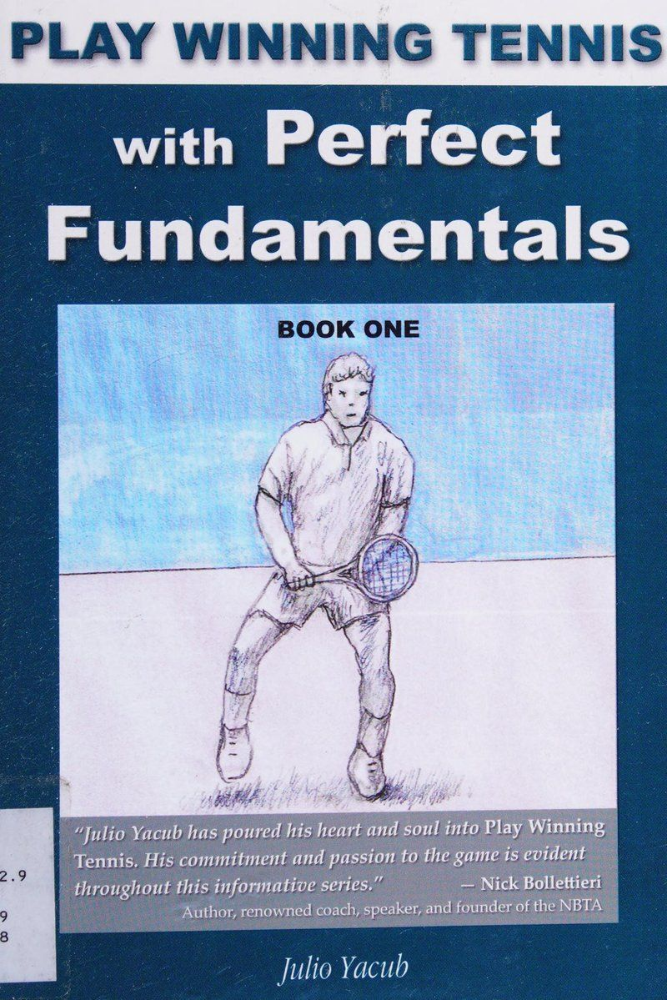
Phiên bản tiếng Việt trọn vẹn cuốn Play Winning Tennis with Perfect Fundamentals của Julio Yacub — phân tích 4 thế đứng nền tảng, 3 kiểu đưa vợt ra sau, nghệ thuật phán đoán và bộ chân, cơ học độ xoáy cùng hệ thống cán cầm bát giác chuẩn mực.
Bản dịch Việt ngữ Tác giả: Julio Yacub Minh họa: Henche Silberstein
Về bản dịch này. Đây là bản dịch Việt ngữ trọn vẹn cuốn Chơi Quần Vợt Chiến Thắng với Nền Tảng Hoàn Hảo (Quyển 1) — Julio Yacub.
Tải bản in: Chơi Quần Vợt Chiến Thắng với Nền Tảng Hoàn Hảo (Quyển 1) — Julio Yacub (PDF).
Bản dịch Việt ngữ này chỉ dùng cho mục đích học tập cá nhân, phi thương mại. Bản quyền tác phẩm gốc thuộc về tác giả và nhà xuất bản.
Là một vận động viên quần vợt tự học, tôi luôn tìm kiếm những cuốn sách có thể giúp tôi cải thiện kỹ năng chơi của mình. Hầu hết những cuốn sách tôi đọc đều dài, dài dòng và phức tạp. Ở trường đại học, tôi gặp vấn đề tương tự: sách, sách, sách, nhưng không có cuốn nào theo sở thích của tôi, đơn giản nhưng sâu sắc. Tôi luôn cần lập dàn ý để tập trung vào những việc cụ thể mà tôi muốn làm. Đúng là một cách học tốt là lập dàn ý của riêng bạn, nhưng đôi khi chúng ta cần chúng sẵn sàng để tập trung vào mục tiêu mà không bị lạc chữ.
PREFACE As a self-taught tennis player, I always looked for books that could help me improve my game. Most of the books that I read were long, wordy, and complicated. In college, I had the same problem: books, books, books, but none to my taste, simple but in-depth. I always needed to make outlines to focus on the specific things I wanted to work on.
Cuốn sách này được viết dưới dạng dàn ý và rất đơn giản để theo dõi.
It is true that a good way of learning is to make your own outline, but sometimes we need them ready in order to concentrate on the goals without getting lost in words.
Bạn thậm chí có thể mang nó xuống sân và tập trung vào bất kỳ cú đánh nào chỉ bằng cách xem qua trang cụ thể đó.
This book is written in outline form, and it is simple to follow.
Play Winning Tennis with Perfect Fundamentals được thiết kế dành cho người học trực quan và người học lối chơi tìm kiếm sự đơn giản mà không cần cắt góc nhưng cũng không phải là hình ảnh hoàn hảo. Trong lối chơi luôn thay đổi này, nơi có nhiều thế đứng, nhiều cách lấy vợt, đánh bóng và theo sau, tôi không thể bao gồm mọi thứ. Đó là lý do tại sao tôi biên soạn cuốn sách này như một hướng dẫn để bạn có thể hiểu cơ chế sinh học hoạt động như thế nào trong quần vợt và với sự giúp đỡ của chuyên gia địa phương, tôi hy vọng bạn có thể cải thiện đáng kể khả năng chơi quần vợt của mình.
You can even take it down to the court and concentrate on any stroke simply by taking a glimpse at that specific page. Play Winning Tennis with Perfect Fundamentals is designed for vi- sual learners and students of the game who look for simplicity without cutting corners, but it is not picture-perfect. In this ever- changing game, where there are many stances, several ways to take the racquet back, hit the ball, and follow through, it would be impossible for me to include everything. That’s why I laid out this book as a guide, so you can understand how biomechanics work in tennis, and, with the help of your local pro, I hope you can improve your tennis game dramatically.
Mặc dù các bản vẽ và sơ đồ được hiển thị từ góc nhìn của người chơi thuận tay phải, nhưng bất kỳ người chơi thuận tay trái nào cũng có thể diễn giải chúng bằng cách sử dụng chế độ xem hình ảnh phản chiếu. Tôi đã bao gồm các chế độ xem bên và phía trước cho hầu hết các nét để việc chuyển đổi sẽ dễ dàng hơn. Ngoài ra, để hiểu rõ hơn về sơ đồ sân, hãy đặt mình vào đó hoặc tưởng tượng rằng bạn đang ở trên sân chơi theo kiểu cụ thể đó (thay vì chỉ nghĩ về người chơi A và người chơi B). Cuối cùng, khi sử dụng thuật ngữ “anh ấy” và “của anh ấy”, tôi hoàn toàn ngụ ý là “cô ấy” và “của cô ấy”.
Even though the drawings and diagrams are shown from a right- handed player’s perspective, any left-handed player can interpret them by using a mirror image view. I included side and front views for most of the strokes so the conversion would be easi- er. Also, to better understand the court diagrams, place yourself in it or imagine that you are on the court playing that particular pattern (instead of just thinking player A and player B). “ae i Ve Ws eee dy ney Pe xi ee ee a aaa a aah oe pte area Woaeion jp Sen) fet <8, duller th et A al D at ae ad ia oes fe ee eet a =a : gi & lige ee ti Soi ea ee Dees Ea, =a = Piya] oF is, ake ane (i of a Cee ee ee oe i a is es eee wim “Fc tne ee ATE ae ae ee eral sig erteaatl bang ie ate] iy - ae amas | sieaenk iediiel a a is <
Lời Cảm Ơn
Tôi phải đề cập rằng nếu không có sự giúp đỡ của nhiều người, tôi sẽ không trở thành con người và tay vợt như ngày hôm nay. Tôi muốn cảm ơn những người cố vấn của tôi, Nick Bollettieri, Vic Braden và Dennis Van Der Meer, vì những đóng góp liên tục của họ cho môn thể thao này và cuộc đời quần vợt của tôi.
LEDGMENT I must mention that without the help of many people I would not be the person and player that | am today. J would like to thank my mentors, Nick Bollettieri, Vic Braden, and Dennis Van Der Meer, for their con- tinuous contributions to the game and my tennis life.
Xin gửi lời cảm ơn đặc biệt tới Jack Groppel và Jim Loehr, những người đã khai sáng cho tôi lĩnh vực tâm lý thể thao và cơ chế sinh học (khi họ nói...tôi lắng nghe!). Tôi cũng xin gửi lời cảm ơn nồng nhiệt nhất tới huấn luyện viên đầu tiên của tôi Ron Steele, cựu huấn luyện viên trưởng đội tuyển Davis Cup Israel, vì đã che chở tôi khi tôi chưa là gì cả. Xin cảm ơn nhóm Chương trình Huấn luyện Hiệu suất Cao của USTA, đặc biệt là Nick Saviano và Paul Lubbers, vì đã nâng cao tầm quan trọng của hoạt động huấn luyện ở Mỹ. Xin gửi lời cảm ơn chân thành tới những người bạn John Lapham và Claudio Yamus của tôi...và tới tất cả học trò của tôi đã gắn bó với tôi suốt những năm qua...bạn là nguồn cảm hứng của tôi.
A special thanks to Jack Groppel and Jim Lochr, who enlightened me to the reaims of sport psychology and biomechanics (when they talk...J listen!). | would also like to extend my warmest gratitude to my first coach Ron Steele, former head coach of the Israeli Davis Cup team, for taking me under his wing when I was nothing. Thanks to the USTA High Performance Coaching Program team, especially to Nick Saviano and Paul Lubbers, for raising the stakes in American coaching.
Cuối cùng, và quan trọng nhất, tôi xin cảm ơn gia đình tôi, đặc biệt là vợ tôi Maura và mẹ tôi Henche Silberstein, nếu không có sự đóng góp và hỗ trợ của họ thì cuốn sách này sẽ chỉ là một điều viển vông.
Sincere ap- preciation to my friends John Lapham and Claudio Yamus...and to all my students for sticking with me all these years...you have been the source of my inspiration. Finally, and most importantly, | would like to thank my family, espe- cially my wife Maura and my mother Henche Silberstein, without whose contributions and support this book would be just a fantasy.
Về Cuốn Sách Này
Cuốn sách này thuộc bộ sách hướng dẫn quần vợt “Chơi quần vợt chiến thắng”, bao gồm mọi khía cạnh của một tay vợt thi đấu hoàn chỉnh.
This book belongs to the instructional tennis series “Play Winning Tennis,” which covers every aspect of the complete competitive player. * Book 1: Playing Winning Tennis with Perfect Fundamentals * Book 2: Playing Winning Tennis with Perfect Basic Strokes * Book 3: Playing Winning Tennis with Perfect Specialty Shots * Book 4: Playing Winning Tennis with Perfect Strategy * Book 5: If] Play Better Tennis, Why Cant I Win? Order of shots and shot description. Bounce and direction of the shot after the bounce. Player B (your opponent). NOTE: All diagrams are shown from a right-handed player’s perspective, and, unless mentioned, all pat- terns are identical from the ad or deuce courts, consequently, easily convertible for left-handed players as well as for planning a strategy from both courts. (Patterns are based on geometry of the court and percentage, not player’s strength or weakness). All “order of shots and shot description” boxes are border coded with the respective shot (line) for easy recognition.
Quyển 1: Chơi quần vợt để chiến thắng với những nguyên tắc cơ bản hoàn hảo
Quyển 2: Chơi quần vợt giành chiến thắng với những cú đánh cơ bản hoàn hảo
Quyển 3: Chơi quần vợt giành chiến thắng với những cú đánh đặc biệt hoàn hảo
Quyển 4: Chơi quần vợt giành chiến thắng với chiến lược hoàn hảo
Quyển 5: Nếu tôi chơi quần vợt giỏi hơn, tại sao tôi không thể thắng?
Chương 1
Thế Đứng Cơ Bản
Bốn thế đứng nền tảng — tư thế sẵn sàng, thế đứng mở, vuông và đóng — cùng chuỗi động học cơ thể tạo ra sức mạnh.
Thuận tay và trái tay
Tất cả các tư thế đều xuất phát từ tư thế thể thao, sẵn sàng. Từ vị trí trung lập này, bạn không chỉ sẵn sàng di chuyển theo bất kỳ hướng nào một cách nhanh chóng và hiệu quả (khởi đầu cân bằng), mà quan trọng nhất là “chuỗi động học của cơ thể” sẽ được tối đa hóa (sản sinh nhịp điệu và sức mạnh cũng như tăng cường khả năng kiểm soát và ngăn ngừa chấn thương).
STANCES Forehand and Backhand All stances derive from an athletic, ready position. From this neutral position, not only will you be ready to move in any direction with quickness and effectiveness (balanced start), but most importantly, the “kinetic body chain” will be maximized (rhythm and power production as well as control enhancement and injury prevention). While most professional players choose the open stance (mostly for forehands) because of its quick preparation and recovery, you should balance the specs of each stance, experiment with them, and choose your own. Keep in mind that a good player is flexible enough to adapt to any tactical situation, and, therefore, proficiency in all stances is a good asset. The Kinetic Body Chain All Strokes The kinetic body chain refers to the segments of the body that act as a chain (body links) in order to produce energy. Starting with the knee extension, ground forces are generated (“for every action there is an equal and opposite reaction”) and successfully transferred from link to link until they reach the ball. The body link system consists of (in order of execution): |. Shoulder and arm rotation . Elbow extension (internal rotation) Wrist flexion Ww bh n In order to generate with efficiency (avoiding injury) the maximum amount of power and control, the body links must be in coordination (timing), meaning that the body link system should be kept in sequence for all strokes starting from the ground up (knees to wrist), without omitting any segment, and without the use of extra body parts (unnecessary elbow motion or too much wrist).
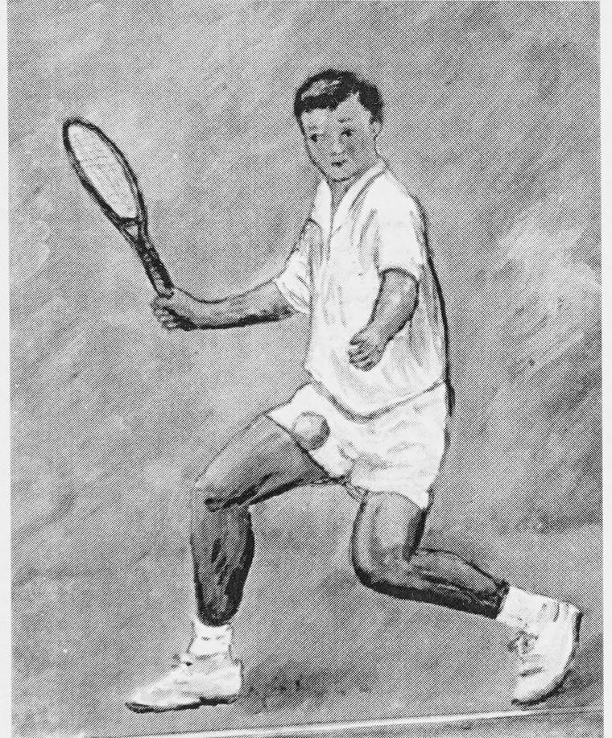
Mặc dù hầu hết người chơi chuyên nghiệp đều chọn tư thế mở (chủ yếu dành cho các cú thuận tay) vì tính chuẩn bị và phục hồi nhanh chóng của nó, nhưng bạn nên cân bằng các thông số kỹ thuật của từng thế đứng, thử nghiệm chúng và chọn tư thế của riêng mình. Hãy nhớ rằng một tay vợt giỏi phải đủ linh hoạt để thích ứng với mọi tình huống chiến thuật và do đó, sự thành thạo trong mọi tư thế là một lợi thế.
Knee Extension @ see eet em RE Hip Rotation 4, Point of Contact 4, Shoulder & Arm Rotation Ce ee a ® Knees bent about 30 degrees. Lowering your body (center of gravity) will prepare your leg muscles to react quicker as well as set you up into a balanced position. * Head up and body weight slightly forward (on the balls of your feet). * Racquet is held at the center of your body, out in front, high but below eye level. * Free hand holds the racquet at its throat. ° Be relaxed but alert and aware of opponent’s next shot. PLAY WINNING TENNIS Advantages: * Quicker preparation (for groundstrokes, and especially needed for quick return of serves). * Quicker recovery (back foot is ready to push to the “Recovery Site”).! * Excellent deception of shot aiming (keeps opponent guessing).
Chuỗi động học cơ thể
Tất cả các cú đánh
Chuỗi động năng của cơ thể đề cập đến các phân đoạn của cơ thể hoạt động như một chuỗi (liên kết cơ thể) để tạo ra năng lượng. Bắt đầu với động tác duỗi đầu gối, lực mặt đất được tạo ra (“đối với mọi hành động đều có phản lực bằng nhau và ngược chiều”) và chuyển thành công từ liên kết này sang liên kết khác cho đến khi chúng chạm tới bóng.
* Ease on crosscourt shots. * Enables you to keep the front side of the body clear throughout the shot (no restrictions in rotating the shoulders and hips). * Easy to slide and reach on clay courts, especially on stretch shots. * Excellent racquet head acceleration. Disadvantages: * Requires upper body flexibility to rotate the shoulders while keeping the hips open (especially for backhands). * Requires powerful leg action due to the reduced weight transfer (no step into the ball like the square stance). * Requires quicker footwork to get closer to the ball. A two-handed open stance shot requires you to get closer to the ball to make contact, compared to a square or closed stance. This makes a big difference on running wide shots.
Hệ thống liên kết cơ thể bao gồm (theo thứ tự thực hiện):
* Difficult to hit down-the-line shots. * Requires a strong arm and wrist for a good swing and snap. * Lower percentage shot because of the extra use of arm and wrist.
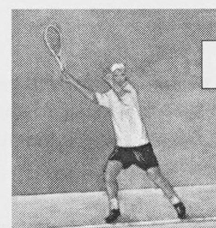
Duỗi đầu gối.
Xoay hông.
Xoay thân người.
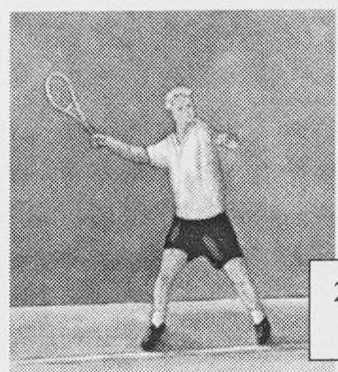
Xoay vai và cánh tay.
Duỗi khuỷu tay (xoay trong)
Uốn cổ tay.
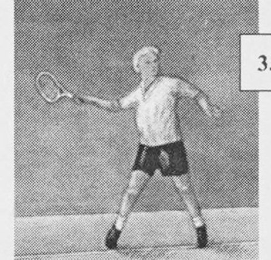
Để tạo ra sức mạnh và khả năng kiểm soát tối đa (tránh chấn thương), các liên kết cơ thể phải phối hợp (thời gian), nghĩa là hệ thống liên kết cơ thể phải được giữ theo trình tự cho tất cả các cú đánh bắt đầu từ mặt đất lên (đầu gối đến cổ tay), không bỏ sót bất kỳ phân đoạn nào và không sử dụng các bộ phận cơ thể phụ (chuyển động khuỷu tay không cần thiết hoặc quá nhiều cổ tay).
SQUARE STANCE Advantages: * Excellent weight transfer due to the forward step. * Good power production (use of kin body chain). * Better aiming by ease to follow through forward to the target * Easy to set up the backhand lly the one-handed). Disadvantages: * One extra step needed for recovery * Harder to keep good balance CLOSED STANCE Advantages: * Easy to hit running wide shots and passing shots. * Ease of defensive slice. Disadvantages: ° Inefficient weight transfer. * Loss of energy (power) due to sideways-locked hips (no hip rotation). * Harder to maintain balance due to the weak foundation (foot position). * Diminished racquet head acceleration.
Thế sẵn sàng (trung lập)
Hai chân dang rộng bằng vai.
Đầu gối cong khoảng 30 độ. Hạ thấp cơ thể (trọng tâm) sẽ chuẩn bị cho cơ chân của bạn phản ứng nhanh hơn cũng như đưa bạn vào tư thế cân bằng.
Ngẩng đầu lên và trọng lượng cơ thể hơi hướng về phía trước (dựa vào mu bàn chân).
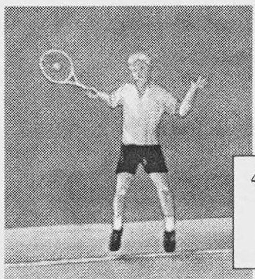
Vợt được giữ ở giữa cơ thể bạn, hướng ra phía trước, cao nhưng dưới tầm mắt.
Tay tự do cầm vợt ở cổ vợt.
Hãy thoải mái nhưng cảnh giác và chú ý đến cú đánh tiếp theo của đối thủ.
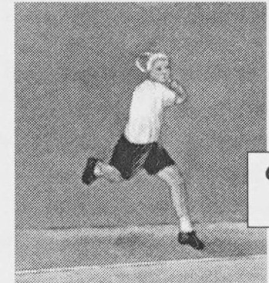
Thế đứng mở
Ưu điểm:
Chuẩn bị nhanh hơn (đối với các cú đánh nền và đặc biệt cần thiết để trả giao bóng nhanh).
Phục hồi nhanh hơn (chân sau sẵn sàng đẩy đến “Điểm hồi vị”).
Bao quát sân tốt hơn.
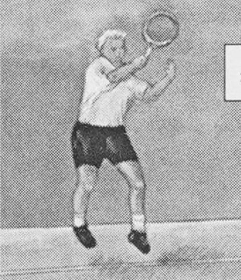
Khả năng đánh lừa hướng đánh bóng xuất sắc (khiến đối thủ phải đoán).
Dễ dàng thực hiện các cú đánh chéo sân.
Cho phép bạn giữ rõ phần phía trước của cơ thể trong suốt cú đánh (không hạn chế xoay vai và hông).
Dễ trượt và tiếp cận trên sân đất nện, đặc biệt là trong những cú phải vươn người.
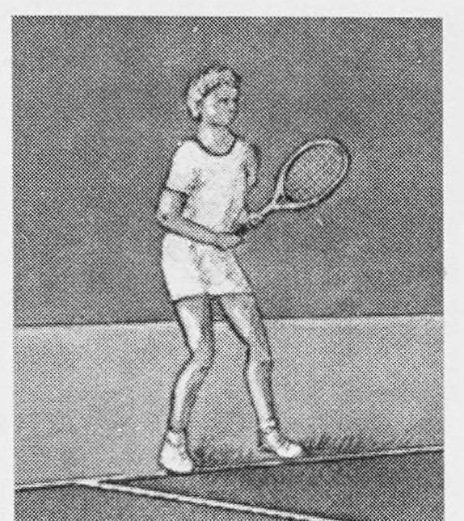
Khả năng tăng tốc đầu vợt tuyệt vời.
Nhược điểm:
Yêu cầu sự linh hoạt của phần thân trên để xoay vai trong khi vẫn giữ hông mở (đặc biệt là đối với các cú đánh trái tay).
Yêu cầu tác động chân mạnh mẽ do khả năng chuyển trọng lượng giảm (không bước vào bóng như tư thế vuông góc).
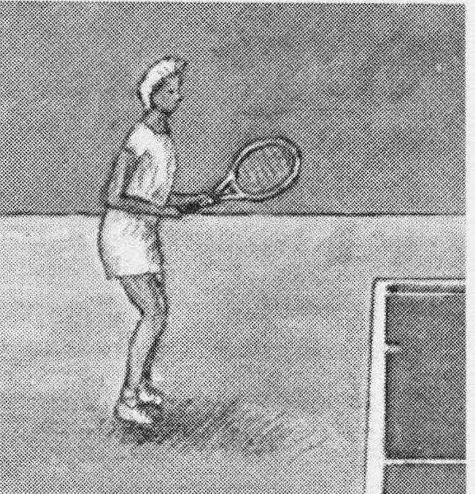
Cần động tác chân nhanh hơn để đến gần bóng hơn. Cú đánh ở tư thế mở bằng hai tay yêu cầu bạn phải đến gần bóng hơn để tiếp xúc, so với tư thế vuông góc hoặc đóng. Điều này tạo nên sự khác biệt lớn khi thực hiện các cú đánh góc rộng.
Khó thực hiện được những cú đánh cận biên.
Cần có cánh tay và cổ tay khỏe để thực hiện cú vung và bắt bóng tốt.
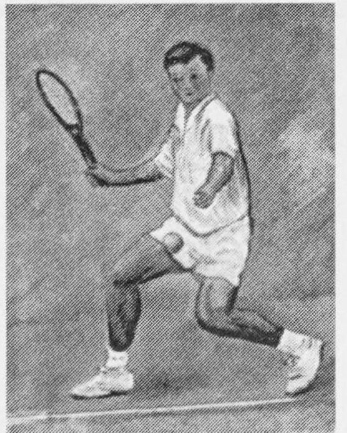
Tỷ lệ bắn thấp hơn do phải sử dụng nhiều cánh tay và cổ tay.
Thế đứng vuông
Ưu điểm:
Chuyển trọng lượng tuyệt vời nhờ bước tiến về phía trước.
Sản sinh năng lượng tốt (sử dụng chuỗi động năng).
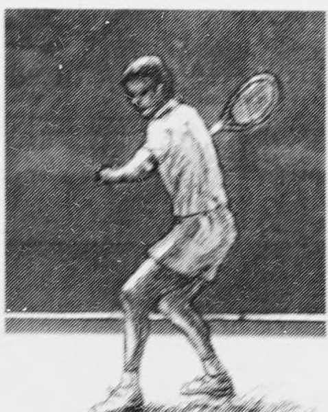
Nhắm mục tiêu tốt hơn một cách dễ dàng để theo sát mục tiêu.
Dễ dàng thiết lập cú trái tay (đặc biệt là cú đánh bằng một tay).
Nhược điểm:
Cần thêm một bước nữa để khôi phục.
Khó giữ thăng bằng hơn.
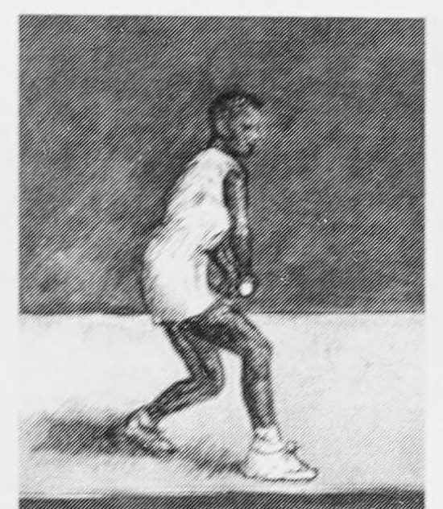
Thế đứng đóng
Ưu điểm:
Dễ dàng thực hiện các cú đánh xa và vô-lê.
Dễ dàng cắt bóng phòng thủ.
Nhược điểm:
Chuyển trọng lượng không hiệu quả.
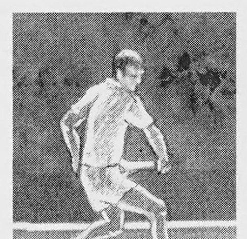
Mất năng lượng (sức mạnh) do hông bị khóa sang một bên (không xoay hông).
Khó giữ thăng bằng hơn do nền (vị trí chân) yếu.
Gia tốc đầu vợt giảm đi.
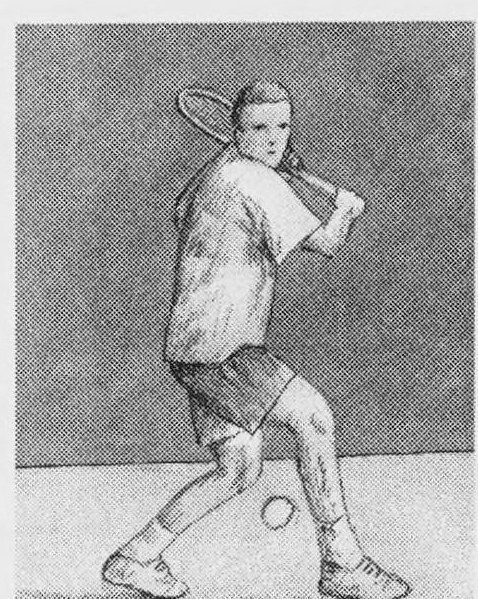
Phục hồi chậm hơn.
Khó thực hiện những cú đánh chéo sân.
Xem Phục hồi trong chương “Dự đoán và bước chân”
® Difficult to hit crosscourt shots. 'See Recovering in chapter “Anticipation and Footwork”
Chương 2
Phong Cách Đưa Vợt Ra Sau
Ba kiểu đưa vợt ra sau kinh điển: thẳng ra sau, đưa xuống và vòng lặp — so sánh nhịp điệu, tốc độ đầu vợt và lượng xoáy trên tạo ra.
Bóng phẳng hoặc Xoáy trên
Thuận tay và trái tay
Động tác đưa vợt ra sau nên được coi là một phong cách chơi và mỗi người chơi nên phát triển phong cách riêng của mình khi luyện tập. Tuy nhiên, tất cả các kiểu động tác đưa vợt ra sau đều có cùng một nền tảng cơ bản và đơn giản: từ vị trí sẵn sàng: tách bước/phản ứng, xoay vai (xoay đơn vị) và vợt tự động lùi về phía sau. Sự khác biệt nằm ở kích thước của vòng giật sau hoặc liệu có vòng lặp nào hay không.
BACKSWING STYLES Flat or Topspin Forehand and Backhand Backswing should be considered a style of play, and each player should develop his own as it is practiced. All backswing styles, however, have the same basic and simple foundation: from the ready position! / split step / react, turn your shoulders (unit turn), and the racquet automatically goes back. The difference lies in the size of the back- swing loop, or whether there is a loop at all. PLAY WINNING TENNIS The most common backswings are: STRAIGHT-BACK * Easy and quick backswing, but not much spin production. Racquet head accelera- tion is generated mostly from the forward arm swing. Therefore, a strong arm is needed. Used mostly for quick return of serves and shots hit on the run, like pass- ing shots. DOWNWARD BACKSWING * Just like the straight-back backswing, this one is quick and fairly easy. Good top- spin production, but if hit late it could become a scoop (racquet hits under the ball, leaving with an upward trajectory and no spin). Make sure, if you use this kind of backswing, not to continue further back than necessary (tip of the racquet should point back), otherwise, the racquet will come up behind you, and a slice (underspin) shot will be produced. Le ee To the point L of contact. , ~< —-- Front View LOOP BACKSWING * Choice of most of the pros. Excellent rhythm, acceleration, and topspin produc- tion. Racquet is taken back with a high loop. As you are getting ready for the for- ward swing, the racquet drops down easily, thanks to gravity (racquet weight), and accelerates to the point of contact. PLAY WINNING TENNIS °* Extended “C” Loop Great racquet head acceleration due to high racquet head backswing.
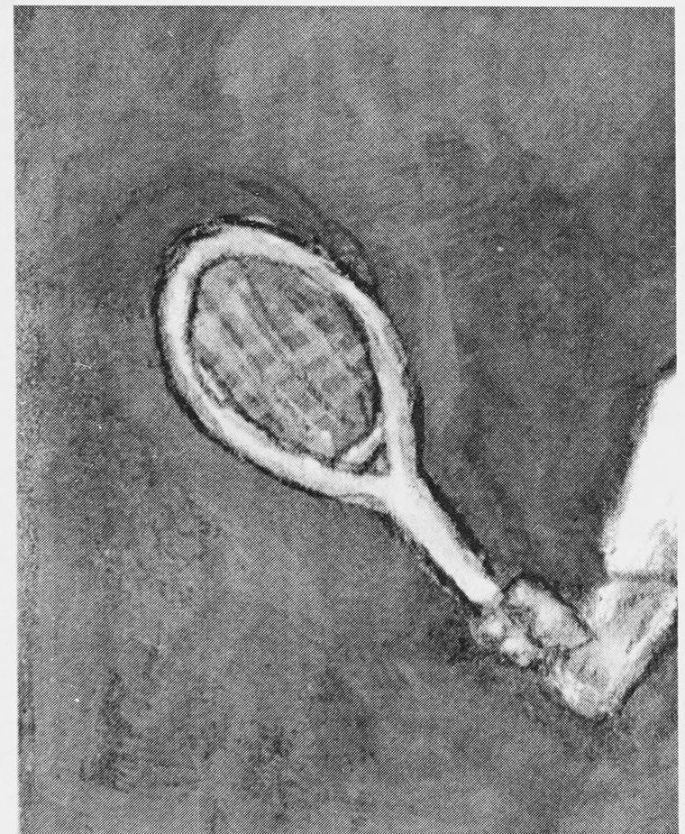
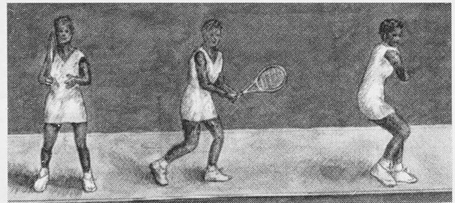
Các động tác đưa vợt ra sau phổ biến nhất là:
Đưa vợt thẳng ra sau
vung vợt ra sau dễ dàng và nhanh chóng, nhưng tạo ra độ xoáy không nhiều. Gia tốc đầu vợt được tạo ra chủ yếu từ cú vung tay về phía trước. Vì thế cần có một cánh tay mạnh mẽ. Được sử dụng chủ yếu để trả giao bóng nhanh và đánh bóng khi đang chạy, chẳng hạn như vô-lê.
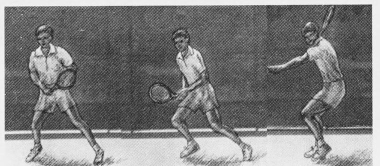
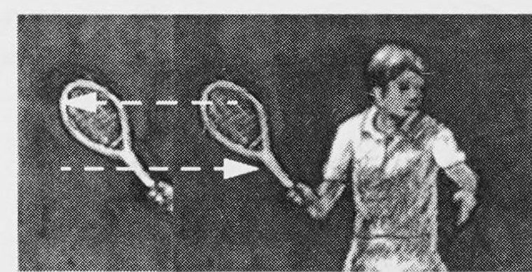
Đưa vợt xuống
Cũng giống như động tác vung vợt về phía sau thẳng, động tác này nhanh chóng và khá dễ dàng. Tạo ra xoáy lên tốt, nhưng nếu đánh muộn nó có thể trở thành một cú giật (vợ đánh vào dưới bóng, rời đi với quỹ đạo đi lên và không có xoáy). Hãy đảm bảo rằng, nếu bạn sử dụng kiểu đánh lùi này, không tiếp tục lùi xa hơn mức cần thiết (đầu vợt phải hướng về phía sau), nếu không, vợt sẽ đi lên phía sau bạn và một cú đánh cắt lát (xoáy xuống) sẽ được tạo ra.
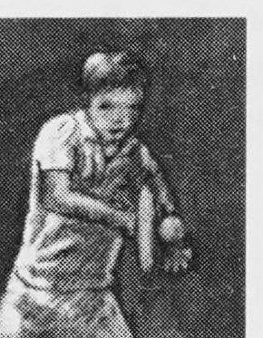
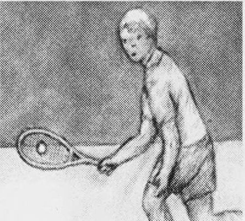
Đưa vợt vòng lặp
Sự lựa chọn của hầu hết các chuyên gia. Nhịp điệu, khả năng tăng tốc và tạo ra xoáy lên tuyệt vời. Vợt được đưa về với một cú giật cao. Khi bạn chuẩn bị thực hiện cú vung về phía trước, vợt dễ dàng rơi xuống nhờ trọng lực (trọng lượng vợt) và tăng tốc đến điểm tiếp xúc.
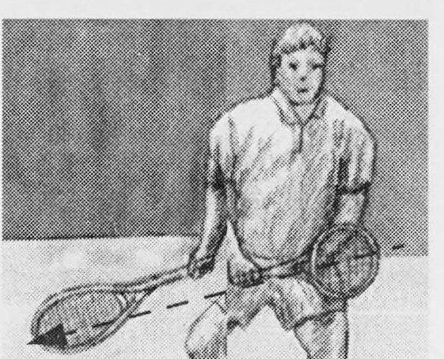
Cú giật “C” nhỏ gọn (Ở mặt trái tay, trông giống như chữ “C” đảo ngược)
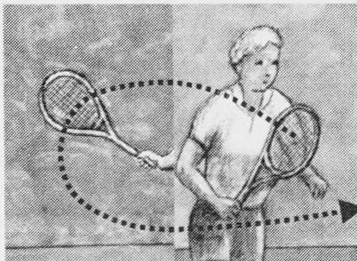
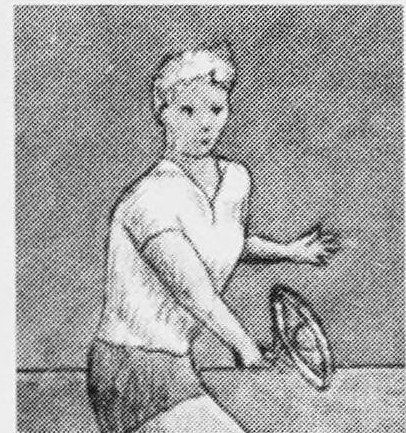
Vòng lặp “C” mở rộng.
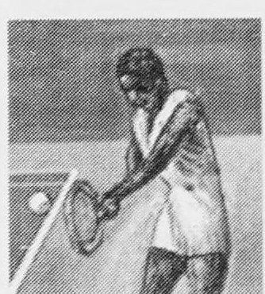
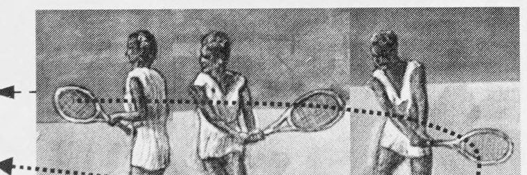
Xoay dưới mức của quả bóng tới để tạo ra xoáy lên tốt (xem “Xoay” ở Chương 1).
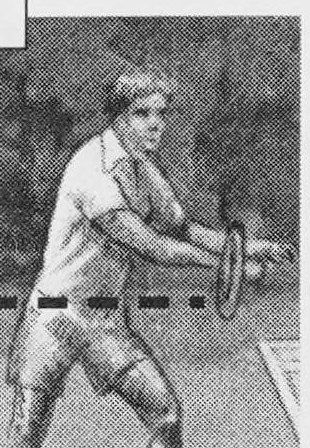
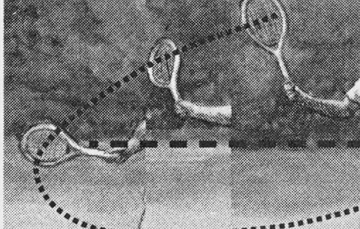
Xem Vị trí sẵn sàng trong chương “Các tư thế”
Vera ieee ; fo the point i of contact. | --—--—- ara\ilevels - Side View * Swing under the level of the coming ball for good topspin production (see “Spins” in Chapter 1). 'See Ready Position in chapter “Stances” il ; 7 ; 2; - : Lae ; : | eee Foes oir erage fi
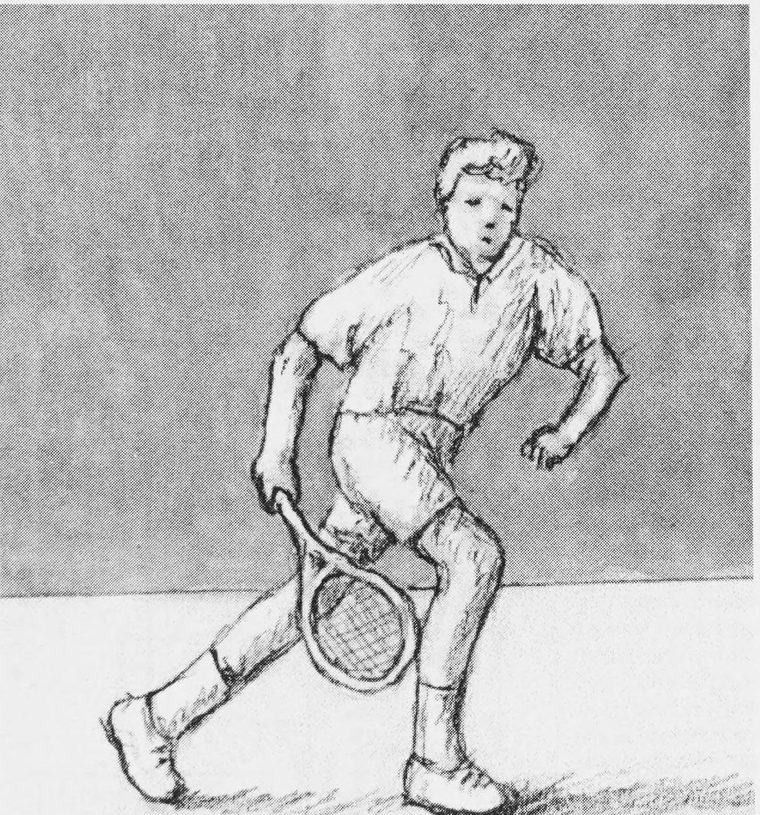
Chương 3
Phán Đoán & Bộ Chân
Nghệ thuật đọc trận đấu: quan sát mặt vợt đối phương, dự đoán cú đánh tiếp theo và bộ chân phản ứng (bước nhún, bước chéo carioca).
Nhận ra nơi đối thủ dự định nhắm vào cú đánh tiếp theo là một vũ khí lớn chống lại chiến lược của anh ta. Dự đoán sẽ vô hiệu hóa cuộc tấn công của anh ta (giữ bóng hiệu quả) và có thể buộc anh ta vào một kế hoạch phòng thủ, chuyển phần trăm sang phía bạn (lối chơi tấn công hoặc tấn công có tỷ lệ thành công cao hơn lối chơi phòng thủ).
ANTICIPATION & FOOTWORK Realizing where your opponent intends to aim his next shot is a big weapon against his strategy. Anticipation will neutralize his attack (keeping the ball in play effectively)! and might force him into a defensive plan, shifting the percentage to your side (offen- sive or attacking game has a higher percentage rate of success than defensive game).? Anticipation is a matter of: Recovering to the “Recovery Site.” Watching the opponent’s racquet face (reacting quicker). Understanding the next possible shot. Getting to the ball early. Also consider: * Understanding the effects of spin.* * Opponent’s pattern of play (especially under pressure). In the example shown to the left, there are two patterns of play. Player “A” keeps the ball crosscourt, rallying patiently (high percentage), and Player “B” hits a more aggressive shot without realizing that his opponent reacts . Crosscourt under pressure with another forchand rally crosscourt shot (automatically).
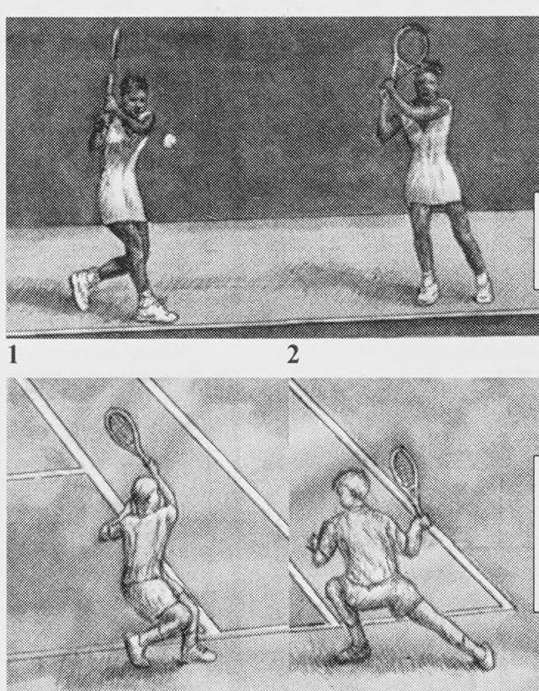
Phán đoán dựa trên:
Đang hồi vị về “Điểm hồi vị.
Quan sát mặt vợt đối phương (phản ứng nhanh hơn).
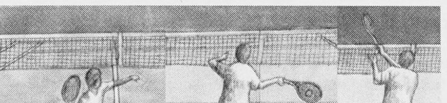
Tìm hiểu về cú đánh tiếp theo có thể thực hiện được.
Bộ chân. Bắt bóng sớm.
Cũng cần lưu ý:
Hiểu tác động của độ xoáy.
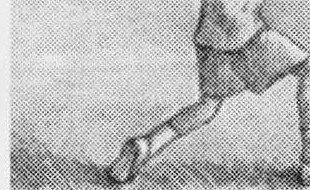
Lối chơi của đối thủ (đặc biệt là khi chịu áp lực).
Một số người chơi có xu hướng có những kiểu đánh bóng cụ thể và một cú đánh cụ thể khi bị áp lực. Nhận biết những cú đánh và kiểu chơi đó sẽ giúp bạn dự đoán cú đánh tiếp theo của đối thủ và do đó, kiểm soát được điểm.
As and a shorter in any other case, every player shot. should be ready for any shot, but having a feel for a possible next shot (anticipation), will quicken your reaction time and, this way, you will reach the ball sooner. ' 2, Player “B” attacking down : the line shot. Player “A” high percentage under pressure crosscourt backhand shot. Some players have a tendency to have specific patterns of rallies and a particular shot when under pressure. Recognizing those shots and patterns of play will help you antic- ipate your opponent’s next shot and, therefore, control the point. * Sound of opponent’s shot (brush for spin). * Speed and height of the ball.
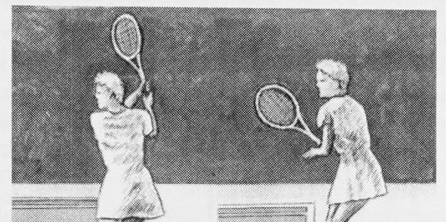
Âm thanh cú đánh của đối thủ (đánh bóng để tạo xoáy).
Tốc độ và độ cao của bóng.
1. Hồi vị (và bao quát sân)
Vị trí của bạn trên sân phụ thuộc vào cú đánh được thực hiện của bạn. Vì lý do này, sau mỗi cú đánh, bạn sẽ cần biết đâu là vị trí tốt nhất trên sân để định vị bản thân (phục hồi) để có thể tiếp cận bất kỳ cú đánh nào của đối thủ.
RECOVERING (and Covering the Court) Your position in the court depends on your executed shot. For this reason, after every shot you will need to know where is the best place on the court to position yourself (recovering) so you can reach any shot by your opponent. Because you need to cover only a few yards (from center of the court), you might think that with just speed and acceleration it is possible to cover the whole court well, but: * Recovering to the “Recovery Site” will make your speed become secondary, and will help you to cover the court easily and effectively. By recovering to the cor- rect spot you will save steps, and, therefore, your tactical plan will become pri- mary (getting to the ball early and hitting the chosen shot). * Speed and acceleration (as well as quickness of the first step) still are indispens- able ingredients for good coverage of the court.
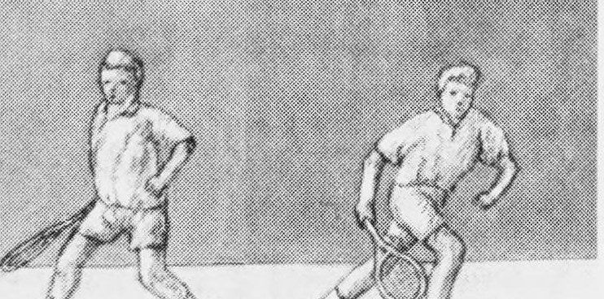
Bởi vì bạn chỉ cần bao quát một vài thước (từ giữa sân), bạn có thể nghĩ rằng chỉ với tốc độ và khả năng tăng tốc thì có thể bao phủ tốt toàn bộ sân, nhưng:
TM “Recovery Site” yr (not in the center of the court) WITH PERFECT FUNDAMENTALS * The “Recovery Site” depends on the executed shot. Aiming to the center of the court. Aiming to the center M7 the court.
Việc hồi vị về “Điểm hồi vị” sẽ khiến tốc độ của bạn trở thành thứ yếu và sẽ giúp bạn bao quát sân một cách dễ dàng và hiệu quả. Bằng cách quay trở lại vị trí chính xác, bạn sẽ tiết kiệm được các bước và do đó, kế hoạch chiến thuật của bạn sẽ trở nên quan trọng (đến bóng sớm và thực hiện cú đánh đã chọn).
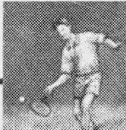
Tốc độ và khả năng tăng tốc (cũng như sự nhanh chóng của bước đầu tiên) vẫn là những yếu tố không thể thiếu để bao quát tốt sân đấu.
“Điểm hồi vị” phụ thuộc vào cú đánh được thực hiện.
“Điểm hồi vị” nằm ở trung tâm tầm với của bất kỳ cú đánh nào của đối thủ có thể xảy ra.
Aiming down the Aiming line. =| The “Recovery Site” is located in the center of reach for any possible opponent’s shot. * Recover to site 1 (center) after a straight shot to the center of the court to reach the best possible return.
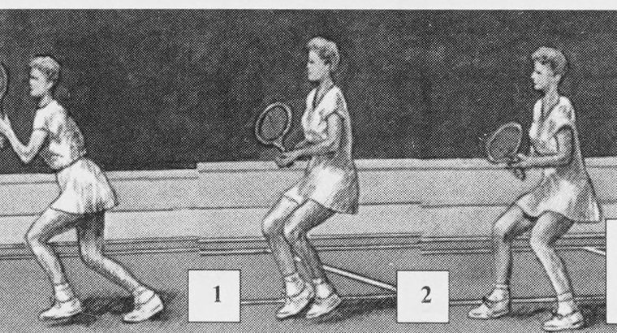
Hồi vị về điểm 1 (giữa) sau một cú đánh thẳng vào giữa sân để đạt được kết quả trả bóng tốt nhất có thể.
Hồi vị về điểm 2 (trái từ giữa) sau một cú đánh từ tuyến dưới để đạt được kết quả quay trở lại tốt nhất có thể.
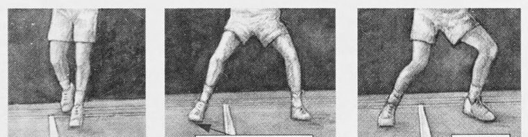
Hồi vị về điểm 3 (ngay từ giữa) sau cú đánh chéo sân để đạt được cú trả bóng tốt nhất có thể.
Cách hồi vị
Để phục hồi nhanh chóng và hiệu quả, chân sau trong mỗi cú đánh vuông góc và ở tư thế đóng bước ra bên ngoài và đẩy ra để di chuyển đến “Điểm hồi vị” hoặc vượt qua các bước để chạy đến cú đánh tiếp theo.
* Recover to site 2 (left from center) after a down-the-line shot to reach the best possible return. * Recover to site 3 (right from center) after a crosscourt shot to reach the best pos- sible return. HOW TO RECOVER For a quick and efficient recovery, the back foot on every square and closed stance shot steps to the outside and pushes off to shuffle to the “Recovery Site,” or cross steps to run to the next shot. Push off from outside foot to recover.
Xáo trộn khi “Điểm hồi vị” không còn xa, như trong một cuộc đánh chéo sân.
The back foot steps out to stop the body inertia and pushes off to recover. Open stance players are ready to push off | 3 from the outside foot.
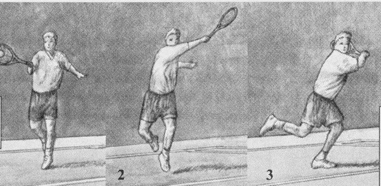
Bước chéo khi bạn ở xa “Điểm hồi vị” và cần phải phục hồi nhanh chóng.
WITH PERFECT FUNDAMENTALS Shuffle when the “Recovery Site” is not far away, as in a crosscourt rally. Cross step when you are far from the “Recovery Site” and a quick recovery is necessary.
2. Quan sát mặt vợt đối phương
Khi đang thực hiện bước nhún (chân cách mặt đất), mắt bạn phải nhìn vào mặt vợt của đối phương khi anh ta đánh bóng. Hành động này sẽ cung cấp cho bộ não của bạn đủ thông tin, khi bạn tiếp đất, để bắt đầu di chuyển sớm (hoặc ít nhất là phản ứng) về phía khu vực mục tiêu dự định của đối thủ cũng như giúp bạn đọc được tốc độ, độ xoáy và độ cao của cú đánh (tức là mặt vợt mở báo hiệu một cú lốp bóng).
WATCHING THE OPPONENT’S RACQUET FACE As the split step is in progress (feet off the ground), your eyes should be on the oppo- nent’s racquet face as he strikes the ball. This action will provide your brain with enough information, as you land on the ground, to start moving early (or at least react- ing) toward the opponent’s intended target area as well as helping you to read speed, spin, and height of the shot (i.e. an open racquet face signals a lob). PLAY WINNING TENNIS As the opponent’s ball crosses the net, you should be already in position to hit the shot (early preparation) at opponent’s target area, waiting for the ball to bounce on your side. 1, Opponent’s * After your opponent point of hits the ball, never stand contact. : still, As the ball leaves es el oe ha your opponent’s strings, anticipate where that ball will land on your | court and move to cover the shot early. Ready Racquet back, waiting for the ball to bounce. Ready and behind the ball before the ball bounces. * Also, be aware of your opponent’s position on the court (next possible shot), clues from his grip, stance, backswing, and the position of the toss when serving. UNDERSTANDING THE NEXT POSSIBLE SHOT Understanding the next possible shot will not only help you get to the ball early, but it will let you play on “automatic pilot,” which, consequently, will lead you to play in “the zone. Playing in “the zone” is an expression that professional players use when they are playing in a comfort zone (perfect points of contact), where every shot works, footwork is quick and agile (light-footed), and an overall good feel is perceived.
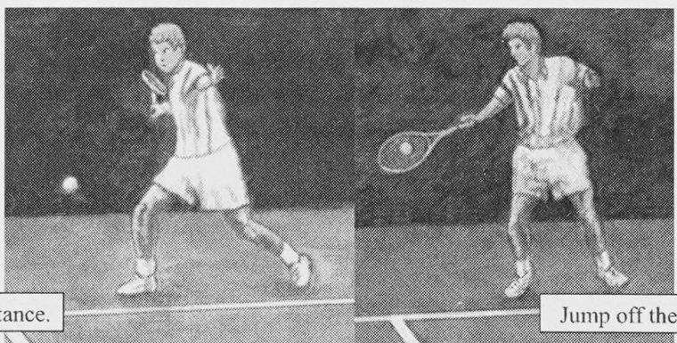
Khi bóng của đối phương đi qua lưới, bạn phải chuẩn bị sẵn sàng để thực hiện cú đánh (chuẩn bị sớm) vào khu vực mục tiêu của đối phương, chờ bóng nảy về phía mình.
Note that all the examples can be reversed. ® When you are attacking with a deep corner shot and moving in to the net, your opponent might get out of trouble with a lob. deep shot or lob, and move in. * On a crosscourt rally, the first shorter ball might be a down-the-line + follow to the net. Attacking down = the line followed + to the net.
Ngoài ra, hãy lưu ý đến vị trí của đối thủ trên sân (cú đánh tiếp theo có thể xảy ra), manh mối từ cách cầm vợt, thế đứng, vung vợt sau và vị trí tung bóng khi giao bóng.
3. Phán đoán cú đánh tiếp theo
Hiểu được cú đánh tiếp theo có thể xảy ra sẽ không chỉ giúp bạn tiếp cận bóng sớm mà còn cho phép bạn chơi theo chế độ “thí điểm tự động”, do đó, sẽ dẫn bạn chơi trong “khu vực”. Chơi trong “khu vực” là cách diễn đạt mà các tay vợt chuyên nghiệp sử dụng khi họ chơi trong vùng thoải mái (điểm tiếp xúc hoàn hảo), nơi mọi cú đánh đều hiệu quả, bộ chân nhanh và linh hoạt (nhẹ nhàng) và cảm giác tổng thể tốt. Lưu ý rằng tất cả các ví dụ đều có thể đảo ngược.
Crosscourt rally and a shallow shot. PLAY WINNING TENNIS * When you are pushed deep behind the baseline, expect a drop shot (especially on slow courts like clay). * If your movement is not the best, or you are not recovering well, your opponent might try to move you around the court, going for the open court. * Most of the time, high percentage chance of put-away shots will go to the open court. Attacking ; down the line ? WITH PERFECT FUNDAMENTALS * After hitting a passing shot down the line, move in diagonally forward as though following the ball, cutting off the angle, covering any possible opponent’s volley (usually if the passing shot is a forcing shot, your opponent will return a weak, short voiley or fall into an “under pressure” pattern of play). Passing shot down the line Passing shot cross court and move in diagonally. * When hitting a drop shot, move in to cover your opponent’s drop shot or angle shot return. ' 2, Next possible shot, another drop shot. ee shot and move in diagonally. * Also consider what your opponent might not do on each particular situation (cutting off possibilities).
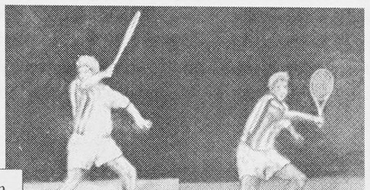
Khi bạn tấn công bằng một cú đánh phạt góc sâu và di chuyển vào lưới, đối thủ của bạn có thể gặp rắc rối với một cú lốp bóng.
Trong một pha đánh bóng chéo sân, quả bóng ngắn đầu tiên có thể là đường dọc + đi vào lưới.
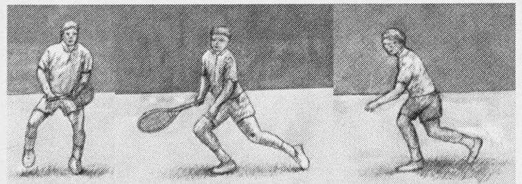
Khi bạn bị đẩy sâu về phía sau đường cuối sân, hãy chờ đợi một cú đánh rơi (đặc biệt là trên mặt sân chậm như sân đất nện).
Nếu chuyển động của bạn không tốt nhất hoặc bạn không phục hồi tốt, đối thủ của bạn có thể cố gắng di chuyển bạn xung quanh sân, sang sân mở.
Trong hầu hết các trường hợp, tỷ lệ phần trăm cao các cú dứt điểm sẽ đến phần sân mở.
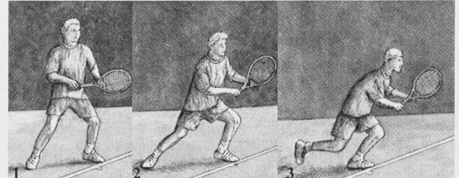
Sau khi thực hiện một cú vô-lê dọc biên, di chuyển theo đường chéo về phía trước như thể đang theo bóng, cắt góc, che bất kỳ cú vô-lê nào có thể có của đối phương (thông thường nếu cú vô-lê là một cú đánh ép buộc, đối thủ của bạn sẽ trả lại một cú vô-lê yếu, ngắn hoặc rơi vào kiểu chơi “chịu áp lực”).
Khi thực hiện cú đánh bỏ nhỏ, hãy di chuyển đến để che chắn cú đánh rơi hoặc cú đánh trả góc của đối thủ.
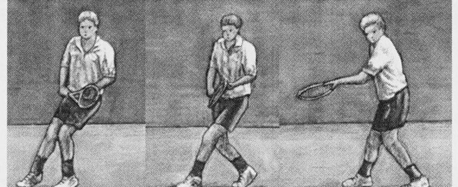
Đồng thời xem xét những gì đối thủ của bạn có thể không làm trong từng tình huống cụ thể (loại bỏ các khả năng).
4. Bộ chân
Bộ chân là yếu tố chính dẫn đến thành công trong hầu hết mọi môn thể thao, nhưng trong quần vợt, bộ chân có hiệu suất cao là đặc biệt cần thiết. Quần vợt là một lối chơi có những tình huống khẩn cấp liên tục, trong đó mỗi cú đánh có thể được thực hiện ở tốc độ, độ xoáy, độ cao và vị trí khác nhau.
FOOTWORK Footwork is a major factor for success in practically every sport, but in tennis, high- performance footwork is particularly essential. Tennis is a game of constant emergen- cies, where every shot can be hit at different speeds, spins, heights, and placements.
Do đó, phải nhanh nhẹn và nhanh nhẹn (cũng như có thể giữ thăng bằng động) là điều bắt buộc để thực hiện tất cả các loại bước và chuyển động cụ thể cần thiết để tiếp cận bóng sớm.
Therefore, being agile and quick (as well as being able to keep dynamic balance) is a must in order to do all the sorts of specific steps and movements required to reach the ball early. How do the pros make it look so easy to run and get to every ball?
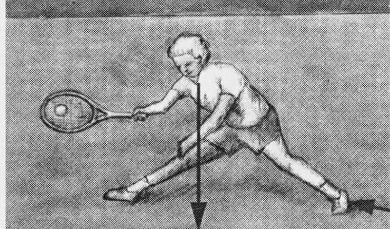
Làm cách nào mà các chuyên gia khiến cho việc chạy và tiếp cận mọi quả bóng trở nên dễ dàng đến vậy? Làm thế nào họ có thể luôn ở đúng nơi vào đúng thời điểm? Câu trả lời là họ đoán trước được cú đánh tiếp theo và họ không bao giờ ngần ngại khi điểm đang diễn ra. Họ duy trì sự di chuyển liên tục: tách bước/phản ứng, nhận bóng, thu hồi.
How do they man- age to be always in the right place at the right time? The answer is that they anticipate the next shot, and they are never flat-footed while the point is in play. They maintain constant movement: split step/react, get to the ball, recover.
A. Bước nhún / Phản ứng
Phản ứng nhanh (ra quyết định nhanh và tốc độ phản ứng nhanh)
SPLIT STEP / REACT KEYS: Timing / Eye on the ball Balance Quick reaction (quick decision-making and quick reaction speed) * Split step builds a foundation to react to the next ball, taking yourself from a bal- anced position to a spring-like position. This reaction should follow with an explosive first step.
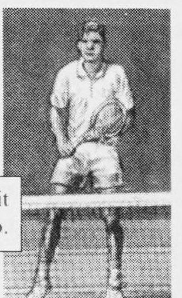
Bước nhún tạo nền tảng để phản ứng với quả bóng tiếp theo, đưa bạn từ vị trí cân bằng sang vị trí giống như lò xo. Phản ứng này sẽ diễn ra sau bước bùng nổ đầu tiên. Nó bắt đầu như một cú nhảy nhỏ trong không khí. Việc này nên được thực hiện mọi lúc trong thời điểm, ngay trước khi vợt của đối thủ tiếp xúc với bóng.
Thời gian là thành phần quan trọng nhất của bước phân tách. Khi bóng chạm dây vợt đối phương, bạn phải đứng trên mặt đất (1). Khi bạn tiếp đất (2), cơ thể bạn tích trữ năng lượng (vào vị trí cân bằng) và do đó bạn có thể di chuyển nhanh chóng theo bất kỳ hướng nào, tùy theo cú đánh của đối thủ (bao gồm di chuyển lùi để thực hiện cú đánh qua đầu và tiến về phía trước để thực hiện cú vô-lê).
Lưu ý: Đảm bảo không thực hiện bước nhún sau khi bóng rời khỏi dây vợt đối phương. Đó là lý do tại sao bạn nên thực hiện chia tách ngay trước điểm tiếp xúc thực sự của đối thủ.
It starts as a little hop in the air. It should be done every time during the point, just before your opponent’s racquet makes contact with the ball. Lean forward | with the racquet Feet ready out shoulder in front.
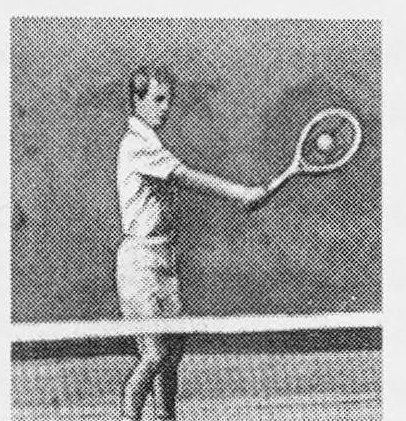
Khi tiếp đất, bạn không được ngã bằng cả hai chân cùng một lúc. Sẽ hiệu quả hơn nếu tiếp đất bằng chân đối diện trước để có được cú đánh mong muốn. Ví dụ, đối với cú thuận tay, người chơi thuận tay phải nên tiếp đất trước bằng ngón chân trái, như vậy bàn chân sẽ đẩy ra, tạo điều kiện và chuẩn bị cho việc xoay vai cho cú đánh tới (việc đầu tiên ngay sau bước xoạc bóng) và ngược lại đối với cú đánh trái tay.
Sử dụng bước nhún bước cũng giúp bạn để mắt đến bóng, đặc biệt là ở điểm tiếp xúc của đối phương, tối đa hóa khả năng dự đoán của bạn (cũng như giúp bạn giữ nhịp với bóng) và giữ thăng bằng, từ đó giúp bạn di chuyển tốt.
WITH PERFECT FUNDAMENTALS * The timing is the most important ingredient of the split step. When the ball is struck on your opponent’s strings, you should be off the ground (1). As you land on the ground (2), your body stores energy (and gets into a balanced position) and so you can move quickly in any direction, according to your opponent’s shot (including moving back for overheads and forward for volleys).
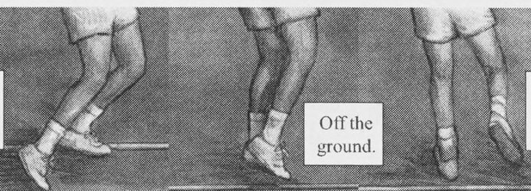
Bạn không cần phải lúc nào cũng đứng trên đôi chân của mình mà một bước nhún hiệu quả sẽ bắt đầu và kết thúc bằng các ngón chân.
Hãy nhớ: Lý do bạn tách ra là để đến cảnh tiếp theo nhanh hơn, vì vậy đừng tách ra và ở lại — tách ra và phản ứng (di chuyển).
Note: Make sure that the split step is not done after the ball leaves the opponent’s strings. That is why it is recommended you do the split just before your opponent’s actual point of contact.
B. Di chuyển tới bóng
Cú đánh nền
Nếu bóng ngắn, hãy tấn công bằng cách di chuyển nhanh về phía trước và đánh bóng bằng chân trước. Để có cú đánh mạnh mẽ hơn, người chơi nâng cao có thể nhảy bằng chân trước (phải duy trì cân bằng động), ngã trên cùng một chân trước và tiếp tục tiến về phía trước.
* As you land, you should not fall on both feet at the same time. It is more effective to land with the opposite foot first for the desired shot. For example, for a fore- hand a right handed player should land first with the left toes, so the foot will push off, facilitating and preparing the shoulder rotation for the coming shot (first thing right after the split step), and vice versa for the backhand.
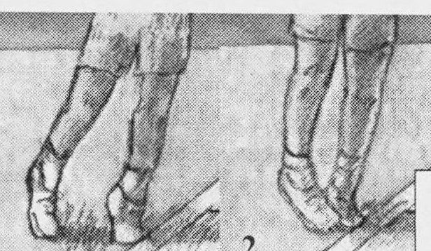
Nếu bóng ở sâu trong sân và phía sau bạn, hãy thực hiện một cú đánh phòng thủ bằng chân sau nhưng chuyển trọng lượng của bạn sang chân trước. Để có một cú đánh phòng thủ tích cực hơn, những người chơi nâng cao có thể nhảy bằng chân sau (phải duy trì sự cân bằng động), tiếp đất bằng cùng một chân sau và sau đó chuyển trọng lượng về phía trước sang chân trước (thường là thuận tay).
This foot touches the ground first. Using a split step also helps you keep your eyes on the ball, especially at the opponent’s point of contact, maximizing your anticipation (as well as helping you keep good rhythm with the ball) and balance, and therefore helps you move well. ® You do not have to be on the balls of your feet all the time, but an efficient split step starts and finishes on the toes. Remember: The reason you split is to get to the next shot more quickly, so don’t split and stay —t split and react (move). GROUNDSTROKES If the ball is short, attack by moving forward quickly and hitting the ball off your front foot.
Nếu bóng ở gần bạn, bước xáo trộn bước sang bên là động tác hiệu quả nhất, bởi vì khi bạn tiếp cận được bóng, bạn sẽ sẵn sàng thực hiện một cú đánh ở tư thế mở hoặc một cú đánh vuông góc nếu bạn bước về phía trước. Sau khi xáo trộn, vai của bạn phải xoay tương ứng (thuận tay hoặc trái tay). Xáo trộn cũng là một chuyển động dễ dàng và tự nhiên cho phép bạn quan sát đối thủ (đặc biệt là tại điểm tiếp xúc của anh ta) khi bạn di chuyển về phía quả bóng hoặc
For a more aggressive shot, advanced players can jump off the front foot (dynamic balance must be maintained), falling on the same front foot and continuing to move forward. Jump off the front Fall on foot. the front a foot and "giorno move eee | forward. If the ball is deep into the court and behind you, hit a defensive shot off your back foot but transfer your weight to your front foot. For a more aggressive defensive shot, advanced players can jump off the back foot (dynamic balance must be maintained), landing on the same back foot, and then transferring the weight forward to the front foot (usually forehands).
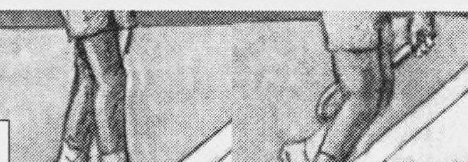
Trên sân đất nện, luôn có độ trượt nhất định. Nếu bạn chơi với tư thế vuông góc, thay vì bước về phía trước như khi chơi trên sân cứng, hãy trượt chân trước, từ đó tạo ra thế đứng ổn định hơn. Ngoài ra, trong các cú đánh nền, khi bạn đến gần bóng, hãy luôn thực hiện các bước điều chỉnh nhỏ để tinh chỉnh khoảng cách giữa bạn và bóng nhằm có điểm tiếp xúc nhất quán.
Recovery If the ball is close to you, a side step shuffle is the most effective movement, because once you get to the ball you will be ready to hit an open stance shot, or a square shot if you step forward. After shuffling, your shoulders must turn accordingly (forehand or backhand). Shuffling also is an easy and natural movement that allows you to watch your opponent (especially at his point of contact) as you move toward the ball or recovery. On clay courts, there is always some degree of sliding.
Nếu bóng ở xa bạn, ngay sau bước nhún chân (1), trước tiên hãy xoay vai tương ứng bằng cách dồn trọng lượng lên chân bên ngoài hoặc phía bạn đang chạy tới (2), đồng thời trượt chân đó về phía giữa trọng lượng cơ thể của bạn (Bước thả).
If you play with a square stance, instead of stepping forward as you would do on hard courts, slide the front foot, thereby creating a more stable stance. Also, on -groundstrokes, as you get close to the ball, always make little adjustment steps to fine tune the distance between you and the ball in order to have a consistent point of contact. If the ball is far from you, right after the split step (1), first turn your shoulders accord- ingly by loading weight onto the outside foot or the side you are running to (2), and simultaneously slide that foot towards the center of your body weight (Drop Step).
Khi bạn sang ngang, sử dụng bước chéo, chạy tới bóng với các bước rộng, di chuyển cả hai tay để tăng tốc tới bóng (3). Sử dụng vợt để giữ thăng bằng khi bạn di chuyển tay. Sau khi bạn tiếp cận được quả bóng, cần phải thực hiện các bước tinh chỉnh nhỏ để tạo ra điểm tiếp xúc hoàn hảo. Mắt phải tập trung vào bóng và đầu giữ cố định trong suốt cú đánh.
DDI OP ys Split Step Drop Step Cross Step PLAY WINNING TENNIS As you get sideways, using a cross step, run to the ball with wide steps, moving both hands in order to accelerate to the ball (3). Use the racquet to maintain balance as you move the hands. Once you get to the ball, small fine-tuning steps are required to make a perfect point of contact.
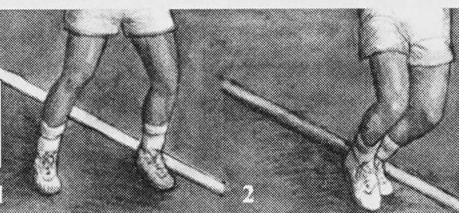
Để có phản ứng bùng nổ về phía trước trên sân đất nện, hãy trượt chân sau để dựng chân trước (tải chân trước).
Eyes must be locked on the ball and head kept steady throughout the shot. For an explosive forward reaction on clay courts, slide the back foot to set up the front foot (loading the front foot).
Cú thuận tay từ trong ra ngoài là một cú đánh thuận tay từ vị trí trái tay (chạy quanh trái tay). Đó là một cú đánh rất mạnh mẽ, nhưng đòi hỏi bộ chân nhanh nhẹn và lùi nhanh để đặt vai và sẵn sàng đánh bóng. Nó thường được đặt sâu trong góc trái tay của đối phương (tay vợt thuận tay phải) hoặc gần giao điểm của đường biên đánh đơn và đường giao bóng để mở sân.
Split Step / React Slide Back Foot Push Off the Front Foot An inside-out forehand is a forehand hit from a backhand position (running around the backhand). It is a very aggressive shot, but requires agile footwork and quick back- pedaling to set the shoulders and get ready to strike the ball. It is usually placed deep in the opponent’s backhand corner (right-handed player) or close to the intersection of the singles sideline and the service line to open up the court. eee Split Step / React Back-Pedal
Trên sân đất nện, việc chạm bóng rộng phức tạp hơn trên sân cứng. Trượt là điều bắt buộc vì lý do rõ ràng là bạn không thể dừng quán tính của cơ thể như trên sân cứng. Điểm tiếp xúc phải được thực hiện ở cuối trang trình bày: nếu không bạn sẽ đi quá xa “Điểm hồi vị.
EIS es: ee ee Early Preparation WITH PERFECT FUNDAMENTALS a ao ee el ee ee On clay courts, reaching for a wide ball is more complex than on hard courts. Sliding is a must for the obvious reason that you cannot stop your body’s inertia as you can on hard courts. The point of contact should be executed at the end of the slide: otherwise you will get too far from the “Recovery Site.”
Các cú đánh ở tư thế mở tạo nền tảng vững chắc cho việc trượt. Tư thế vuông góc mất nhiều thời gian hơn để phục hồi do cần phải bước thêm (bước chân lùi ra bên ngoài). Đối với cả hai tư thế, để trượt hiệu quả, trọng lượng của bạn phải được phân bổ đều ở tâm cân bằng, giữ cơ thể khá thấp để tiếp đất nhiều hơn mà không làm mất thăng bằng. Yếu tố kiểm soát độ dài của đường trượt là cách trọng lượng của bạn được chuyển sang chân sau. Bạn càng đặt nhiều trọng lượng lên bàn chân sau thì bạn càng bị gãy. Nếu trọng lượng dồn lên chân trước, bạn sẽ không thể trượt được (mất thăng bằng động). Điều quan trọng là phải giữ đầu cố định trong suốt quá trình trượt để mắt bạn có thể tập trung vào quả bóng và bạn có thể duy trì sự cân bằng động.
End of Slide / Point of Contact Back foot e controls the ie length of the slide (break). LESSEE Open stance shots create a solid foundation for sliding. Square stances take longer to recover from due to the need for the extra step (back foot steps to the outside). For either stance, in order to slide efficiently, your weight should be distributed evenly at your center of balance, keeping your body fairly low to cover more ground without sacrificing balance. The control factor for the length of the slide is how your weight ts transferred onto the back foot. The more weight you place on the back foot, the more you break. If your weight is on the front foot, you won’t be able to slide (loss of dynamic balance). It is important to keep the head still throughout the slide so your eyes can stay locked on the ball and you can maintain dynamic balance.
Đánh bóng khi đang chạy hết tốc lực
Lý tưởng nhất là bạn nên thực hiện động tác chân nhanh, bùng nổ (đặc biệt là bước đầu tiên) để tiếp cận bóng sớm và có thời gian dừng lại và đánh bóng cân bằng. Ngày nay, những tay vợt hàng đầu rất mạnh mẽ nhờ tập luyện phối hợp, chế độ ăn uống hợp lý và công nghệ vợt, vì vậy một số cú đánh có thể được thực hiện hoàn toàn trong khi vẫn giữ được sự cân bằng động và tạo ra một cú đánh rất quyết liệt (ngay cả khi đứng ở tư thế đóng, bất cứ khi nào cần thiết). Trong những tình huống rất khó khăn, khi sức mạnh không thể được tạo ra nhiều, lốp bóng là một giải pháp tốt.
Hitting on Full Run Ideally, you should work on quick, explosive footwork (especially the very first step) to get to the ball early and have time to stop and hit the ball in balance. Today, top play- ers are very powerful thanks to cross training, proper diet, and racquet technology, so some shots can be hit on full run while still keeping dynamic balance and producing a very aggressive shot (even on closed stances, whenever it is required). Under very hard situations, when power cannot be greatly produced, a lob is a good way out. PLAY WINNING TENNIS Running strokes should be hit off the front foot for many reasons: Forehand * On the full run, inertia will carry you one or more steps, so having the point of contact off the front foot, the following step will be with the back foot. This leaves you in a perfect position to get to your “Recovery Site” using the back foot for a cross step. It also helps to stop your body from further running (inertia). * Hitting off your front foot will transfer most of your potential energy (weight) into the shot. The hips will rotate only with the extra step (back foot steps to the outside), generating some more power and acceleration on the follow-through. * When the point of contact is late or behind, hitting off the back foot is still very effective on the forehand side (especially aiming down the line) due to the posi- tion of the dominant shoulder (right shoulder is behind for a right-handed player). * Players with open stance forehands will find it much harder to hit the ball and to transfer the weight forward (open stance needs to be closer to the ball compared to a closed or square stance). Backhand * One or two-handed backhands are much tougher to hit off the back foot because of the position of the dominant shoulder (right shoulder is in front for a right- handed player).
Các cú chạy nên được đánh bằng chân trước vì nhiều lý do:
As the ball is struck off the back foot, the weight cannot be trans- ferred forward. VOLLEY Uf the Balt Is Hit Right at You For an aggressive punch volley, step to the apex of the triangle according to the volley (left foot for a right-handed forehand, right foot for a backhand) before making contact.
Thuận tay
Khi chạy hết cỡ, quán tính sẽ đưa bạn đi một hoặc nhiều bước, do đó, điểm tiếp xúc nằm ngoài bàn chân trước, bước tiếp theo sẽ là bằng chân sau. Điều này giúp bạn có được vị trí hoàn hảo để đến “Điểm hồi vị” bằng cách sử dụng chân sau để thực hiện bước chéo. Nó cũng giúp ngăn cơ thể bạn tiếp tục chạy (quán tính).
Cú đá bằng chân trước sẽ truyền phần lớn năng lượng (trọng lượng) tiềm năng của bạn vào cú đánh. Hông sẽ chỉ xoay khi bước thêm (bước chân sau ra bên ngoài), tạo thêm lực và gia tốc khi thực hiện bước tiếp theo.
Khi điểm tiếp xúc muộn hoặc phía sau, cú đánh bằng chân sau vẫn rất hiệu quả ở phía thuận tay (đặc biệt là nhắm dọc theo đường biên) do vị trí của vai thuận (vai phải ở phía sau đối với người chơi thuận tay phải).
Những người chơi có tư thế thuận tay mở sẽ khó đánh bóng hơn và chuyển trọng lượng về phía trước (tư thế mở cần phải gần bóng hơn so với tư thế đóng hoặc vuông).
Trái tay
Những cú trái tay bằng một hoặc hai tay khó đánh bằng chân sau hơn nhiều do vị trí của vai thuận (vai phải ở phía trước đối với người chơi thuận tay phải). Khi bóng bị đập ra khỏi chân sau, trọng lượng không thể chuyển về phía trước.
Vô-lê
Nếu bóng đánh ngay vào người bạn
Nếu bóng ở quá xa
Khi quả bóng ở quá xa tầm với của bạn và bộ chân tốt không thể tạo ra sự khác biệt, phương án cuối cùng là một cú vô-lê đâm, rất có thể sẽ tạo ra một cú vô-lê.
WITH PERFECT FUNDAMENTALS Foot Positioning during a Punch Volley (Front View) SS ss Sas Point of Contact (one foot out in front). Recover with the back foot stepping to the outside. Step up in front according to the particular volley. Use a cross step only for shots that are too far to reach or when you are late.
Để thực hiện một cú lao nhanh và hiệu quả, sau bước nhún, trước tiên hãy di chuyển bằng chân bên ngoài về phía cú đánh (Bước Jab lớn) khi bạn đẩy ra bằng chân kia, sau đó dùng chân đó vượt qua để cuối cùng chạm được bóng hoặc để kiểm soát thăng bằng cơ thể. Mặt vợt vẫn thẳng đứng nhất có thể trong suốt điểm tiếp xúc. Tay còn lại luôn giúp kiểm soát thăng bằng cơ thể (thuận tay và trái tay).
Move right after the oy split with the outside foot | 4 towards the intended point of contact, cutting off the | angle (Jab Step). | j rc: Move diagonally to SPLIT STEP | eae off the angle. PLAY WINNING TENNIS If the Ball Is Too Far Away When a ball is too far from your reach, and good footwork cannot make a difference, the last resort is a stab volley, which most likely will produce a drop volley.* For a quick and effective lunge, after the split step, move first with the outside foot towards the shot (large Jab Step) as you push off with the other foot, and then cross over with it to finally reach the ball or to control your body balance. Racquet face remains as vertical as possible throughout the point of contact. The free hand always helps to control the body balance (forehand and backhand). Note: Recovering footwork patterns and positioning (recovering to the “Recovery Site”) for all volleys are performed as groundstrokes.” SERVE There are many footwork options on how to start the serve, and all of them are accept- able.
Lưu ý: Việc khôi phục các kiểu bộ chân và định vị (hồi vị về “Điểm hồi vị”) cho tất cả các cú vô-lê được thực hiện dưới dạng bộ chân.
What you choose is a matter of preference, and, eventually, if it is consistent, it will become part of your style. The most common footwork patterns are: Pushing off the front foot and landing with it inside the court, following with the back (right) foot forward, getting ready to do a split step or to keep running forward for a “serve & volley” game. * Simple and effective for all game styles.
Giao bóng
Có nhiều lựa chọn bộ chân về cách bắt đầu giao bóng và tất cả chúng đều có thể chấp nhận được. Những gì bạn chọn chỉ là vấn đề sở thích, và cuối cùng, nếu nó nhất quán, nó sẽ trở thành một phần phong cách của bạn. Các kiểu bộ chân phổ biến nhất là:
* Excellent for “serve & volley” type of game (easy to get well inside the court, therefore, easy to reach the net) or for aggressive serves (good angular and for- ward momentum production). WITH PERFECT FUNDAMENTALS Pushing off the front foot and landing with the back foot first inside the court, fol- lowing with the left, getting ready to do a split step. * Good angular (trunk) rotation. * Effective if staying back for baseline type of game. Off the ground Fall on the back foot.
Đẩy chân trước ra và tiếp đất bằng chân đó trong sân, theo sau bằng chân sau (phải) về phía trước, sẵn sàng thực hiện tách bước hoặc tiếp tục chạy về phía trước để thực hiện lối chơi “giao bóng & vô-lê”.
Dragging the back foot to the back of the front foot and pushing off from the front foot, \anding first with the front foot inside the court, and following with the back (right) foot forward, getting ready to do a split step or to continue to run forward for a “serve & volley” game. * Excellent spin production thanks to both feet aggressively pushing upward in synch with the arm. Not only can it create aggressive topspin, but by falling on the front foot well inside the court followed by the back (right) foot, you can also create angular and forward momentum, which, conse- quently, allows you to reach the net quickly. * The only drawback is lack of balance due to the small base formed when the back foot is dragged to the back of the front foot. ~ Drag the back the front .
Đơn giản và hiệu quả cho mọi phong cách lối chơi.
Tuyệt vời cho kiểu lối chơi “giao bóng & vô-lê” (dễ thực hiện tốt trong sân, do đó, dễ tiếp cận lưới) hoặc cho những cú giao bóng mạnh mẽ (tạo ra góc và động lượng chuyển tiếp tốt).
Đẩy chân trước và tiếp đất bằng chân sau trước tiên trong sân, sau đó là chân trái, chuẩn bị thực hiện bước nhún.
and push off the front foot. RETURN OF SERVE Although the return of serve is a completely different stroke from the volley, the foot- work patterns are similar. Step up in front at you, load the and make contact.
Góc xoay thân người tốt.
Hiệu quả nếu quay lại loại lối chơi cơ bản.
Kéo chân sau về phía sau của chân trước và đẩy ra từ chân trước, tiếp đất trước bằng chân trước trong sân và theo sau bằng chân sau (phải) về phía trước, chuẩn bị thực hiện bước nhún hoặc tiếp tục chạy về phía trước để thực hiện lối chơi “giao bóng & vô-lê”.
outside foot as you set the racquct. If the ball is away or shallow, cut off the angle by stepping diagonally (forward to the side) with the outside foot as you set , Move diagonally the Tacauet to cut off the angle. HOW TO MOVE BACK * By stepping back with the right foot (the same foot that holds the racquet) right after the split step, not only are you getting away from the net more quickly, but because you are turned sideways you are also setting up for quick, back-stepping footwork. PLAY WINNING TENNIS * Once you are faced sideways, use side step shuffles or cross steps to move back.
Tạo độ xoáy tuyệt vời nhờ cả hai chân đẩy mạnh lên trên đồng bộ với cánh tay.
Tuyệt vời cho thể loại lối chơi “giao bóng và vô-lê”. Nó không chỉ có thể tạo ra xoáy lên mạnh mẽ mà còn bằng cách ngã bằng chân trước ở bên trong sân, sau đó là chân sau (phải), bạn còn có thể tạo ra xung lượng góc và xung lượng về phía trước, do đó, cho phép bạn tiếp cận lưới nhanh chóng.
Hạn chế duy nhất là thiếu thăng bằng do phần đế nhỏ hình thành khi bàn chân sau bị kéo về phía sau của bàn chân trước.
Đỡ giao bóng
Mặc dù cú trả giao bóng là một cú đánh hoàn toàn khác với cú vô-lê, nhưng kiểu bộ chân cũng tương tự.
Cross Step * If the ball is still too high by the time you need to make contact, use a scissors- kick jump or a straight-up jump. The straight-up jump is more often used with the side step shuffle, and it is hard to maintain dynamic balance throughout the stroke (no angular rotation and difficult to transfer the weight forward). Scissors Kick Jump Back foot.
Đập trên cao
Cách lùi về sau
Bằng cách lùi lại bằng chân phải (cũng là chân cầm vợt) ngay sau bước nhảy, bạn không chỉ thoát khỏi lưới nhanh hơn mà còn vì bạn bị xoay sang một bên nên bạn cũng đang chuẩn bị cho động tác bước lùi nhanh, nhanh.
Khi bạn đã quay mặt sang một bên, hãy di chuyển bước sang bên hoặc bước chéo để lùi lại.
Nếu bóng vẫn ở quá cao vào thời điểm bạn cần tiếp xúc, hãy sử dụng động tác nhảy cắt kéo hoặc nhảy thẳng. Cú nhảy thẳng thường được sử dụng nhiều hơn với bước xáo trộn bước ngang và khó duy trì sự cân bằng động trong suốt cú đánh (không có góc xoay và khó chuyển trọng lượng về phía trước).
Cú lên lưới
Bởi vì bạn cần tiếp cận bóng ở độ cao tối đa của độ nảy của nó và do đó bạn có thể tiếp cận lưới càng sớm càng tốt để giảm thời gian phản ứng của đối thủ, hiệu quả bộ chân là yếu tố quan trọng nhất để có một cú đánh tiếp cận tốt.
APPROACH SHOT Because you need to get to the ball at the maximum height of its bounce, and so you can reach the net as early as possible to cut down on the reaction time of your oppo- nent, footwork efficiency is the most important ingredient factor for a good approach shot. * Very aggressive approach shots. * Best for topspin shots and two-handed backhands. CARRIOCA STEP * Best for one hand backhand slice shots. * The carrioca step (back foot steps behind front foot) happens right affer the point of contact, allowing the hips to stay sideways throughout the slice stroke on the one hand backhand, and therefore allowing you to hit through the shot (without completely stopping), imparting good underspin with accuracy. PLAY WINNING TENNIS * On the one-handed backhand slice, do the carrioca step after the point of contact (as follow through is performed). * On the forehand slice and the two-handed backhand (slice and topspin), the back foot steps in front of the front foot. This step happens before the point of contact, helping you move through and move quicker towards the net. RUNNING DOWN A LOB 1, EARLY RECOGNITION * Right after the split step, recognize that is a lob (unreachable overhead smash).
Nhảy bằng chân trước?
Những cú đánh tiếp cận rất quyết liệt.
Tốt nhất cho các cú đánh xoáy lên và trái tay bằng hai tay.
Bước carioca
Tốt nhất cho các cú đánh trái tay bằng một tay.
Bước carioca (bước chân sau ra sau chân trước) xảy ra ngay sau điểm tiếp xúc, cho phép hông giữ ngang trong suốt cú đánh cắt ở trái tay một tay, và do đó cho phép bạn đánh xuyên qua cú đánh (mà không dừng lại hoàn toàn), tạo ra xoáy xuống tốt với độ chính xác.
Trên cú cắt trái tay bằng một tay, thực hiện bước carioca sau điểm tiếp xúc (như được thực hiện theo sau).
Ở cú cắt thuận tay và cú trái tay bằng hai tay (cắt và xoáy lên), bàn chân sau bước lên phía trước bàn chân trước. Bước này diễn ra trước điểm tiếp xúc, giúp bạn di chuyển qua và di chuyển nhanh hơn về phía lưới.
Chạy đuổi bóng bổng
1. Nhận biết sớm
Ngay sau bước nhún, nhận ra rằng đó là một cú lốp bóng (cú đập từ trên cao không thể tiếp cận).
2. Quay người và chạy
Nhanh chóng lùi về phía sau bằng bước lùi (cùng chân cầm vợt) để lốp bóng hướng qua đầu hoặc qua phía thuận tay của cơ thể bạn, và lốp bóng dọc theo cạnh của bóng (không phải ngay dưới bóng) trong khi vẫn quan sát bóng. Nếu bóng đi qua phía trái tay, chỉ cần quay lại và đưa bóng xuống.
Chạy nhanh hơn đường bay của quả bóng để đuổi theo nó (đánh bóng).
Luôn chạy lùi một bước nhiều hơn mức cần thiết vì việc điều chỉnh tiến lên ở giây cuối cùng sẽ dễ dàng hơn nhiều so với việc chạy muộn.
3. Điểm tiếp xúc
Đánh bóng phù hợp (tùy thuộc vào phía nào của bóng), xoay cơ thể 180 độ (hướng về phía lưới), xoay chân sau (thuận tay và trái tay).
Mặt vợt nên hơi mở ra để đánh trả một cú lốp bóng sâu.
4. Đưa vợt theo bóng
Theo dõi khi cơ thể tiếp tục quay.
Trọng lượng nên được chuyển sang chân trước.
Hoàn thành ở vị trí cao để có chiều cao và chiều sâu tốt.
5. Hồi vị
Cú bỏ nhỏ
Không thực hiện cú đánh rơi khi chạy hết tốc lực. Trước điểm tiếp xúc, hãy giảm tốc độ của bạn vì cánh tay, cổ tay và vợt sẽ hấp thụ phần lớn năng lượng để tạo ra cú đánh rơi hiệu quả.
TURN AND RUN * Quickly turn backward using a back step (same foot that holds the racquet) for the lobs directed over your head or over the forehand side of your body, and run the lob down along the side of the ball (not right under it) while still watching the ball. If the ball goes over the backhand side, just turn around and run the ball down. * Run guicker than the flight of ball in order to get behind it (beat the ball). * Always run back a step more than necessary because is much easier to adjust for- ward on the last split second than to hit it late. Watch the ball while running. Run on either side of the ball to get in position to hit it. POINT OF CONTACT * Hit the ball accordingly (depending on which side of the ball you are on), rotating your body 180 degrees (facing forward to the net), pivoting on the back foot (forehand and backhand).
Trên sân đất nện, tiếp xúc với bóng ở cuối đường trượt.
* Racquet face should be slightly open to hit back a deep lob.%7 fa = | Pivot otf the back foot. FOLLOW THROUGH * Follow through as body keeps rotating. * Weight should be transferred to the front foot.
Xem quyển 4, chương “Chiến lược đột phá”
* Finish high in order to get good height and depth. RECOVERY Back foot steps to the outside.
Xem quyển 3, chương “Lob”.
’ Xem quyển 4, chương “Chiến lược bổng bóng”
DROP SHOT Do not hit the drop shot at a full run. Before point of contact, slow down your speed, as the arm, wrist, and racquet absorb most of the energy to produce an effective drop shot. On clay courts, contact the ball at the end of the slide.
Chương 4
Độ Xoáy Bóng
Cơ học của các loại xoáy — xoáy trên, xoáy dưới/cắt và phẳng — khi nào nên dùng, cách tạo và cách đối phó với từng loại.
Tối đa hoá kiểm soát: Độ xoáy
Độ xoáy có thể được sử dụng vì một số lý do. Bằng cách tận dụng xoáy trên, một số người chơi có thể hung hãn hơn. Những người khác, như những người chơi phòng ngự, sử dụng nhiều chiến thuật phòng thủ hơn, khai thác xoáy dưới. Nhưng còn nhiều hơn thế nữa khi quả bóng quay. độ xoáy của quả bóng có thể cho bạn biết quả bóng sẽ nảy lên như thế nào khi chạm đất. Số độ xoáy của quả bóng cũng có thể cho bạn biết về đường bay và độ sâu của nó (cùng với tốc độ và độ cao của cú đánh của đối thủ). Bạn có thể đoán trước cú đánh tốt hơn nếu bạn hiểu được vòng xoáy khi nó bay về phía bạn và do đó, bạn có thể chuẩn bị tốt hơn cho cú đánh tiếp theo.
By utilizing topspin, some players can be more aggressive. Others, like retrievers, use more defensive tactics, exploiting the underspin. But there is more than that when the ball spins. The ball rotation can tell you how the ball is going to bounce when it touches the ground. The amount of revolu- tions on the ball also can tell you about its flight and depth (together with the speed and height of your opponent’s shot). You can anticipate the shot better if you understand the spin as it flies to your side and, therefore, you can be better prepared for the next shot.
Ngoài ra, sự kết hợp của độ xoáy nặng (xoáy lên), sức mạnh và khối lượng (cơ thể và trọng lượng vợt của bạn truyền vào bóng tại thời điểm đánh) tạo ra một quả bóng nặng. Kiểu đánh này là cú đánh nâng cao, khó thực hiện hơn nhiều so với cú đánh phẳng hoặc xoay nhẹ.
Also, a combination of heavy spin (topspin), power and mass (your body and racquet weight transferred into the ball at striking time) creates a heavy ball. This kind of shot is an advanced shot, much harder to return than a flat or light-spanned shot. So, if spin controls the flight of the ball, and you control spin, you control the point.
Vì vậy, nếu độ xoáy điều khiển đường bay của quả bóng và bạn điều khiển độ xoáy thì bạn sẽ kiểm soát được điểm.
STROKES TOPSPIN (Side View) > | Energy Vectors Bounce of Ball Racquet face should follow the direction (Side View) of the vectors, brushing the backside of a the ball, ow to high, without changing its angle. The more upward the black vectors (and faster the acceleration), the more pronounced the spin created (as with a topspin lob).
Các cú đánh
Xoáy trên (Nhìn ngang)
Hiệu ứng của độ xoáy:
Tăng áp suất không khí lên trên quả bóng, khiến quả bóng rơi nhanh.
Bóng bật ra khỏi mặt sân nhanh hơn, cao hơn và xa hơn (đá lên) so với cú đánh phẳng.
Lợi ích:
Một cú đánh có độ xoáy cực cao có thể vượt qua đầu, tạo ra một cú đánh khó đánh trả, cũng như giữ đối thủ của bạn ở sâu.
Cú đánh mạnh mẽ có thể buộc đối thủ của bạn phải lùi lại một cách yếu ớt.
Dễ dàng phá lưới vì bóng có xu hướng ở lại sân.
Đối phó với người đánh xoáy trên:
Cú đánh xoáy lên của đối thủ sẽ đẩy bạn về phía cuối sân, vì vậy hãy đảm bảo rằng cú đánh của bạn không ngắn, trả sâu theo tốc độ; nếu không, đối thủ sẽ tấn công những cú đánh nông của bạn.
Cố gắng đưa bóng lên cao. Bằng cách này, bạn có thể ở gần hoặc bên trong đường cuối sân và duy trì khả năng tấn công của mình.
Lưu ý độ xoáy ảnh hưởng như thế nào đến độ nảy của bóng (góc tới). Nếu các cú đánh của đối phương tiếp đất ngắn (cách vạch giao bóng khoảng 60–90 cm) nhưng với độ xoáy lên cao, những cú đánh đó vẫn có thể đẩy bạn lùi xa về phía sau đường cuối sân.
Xoáy dưới — Cắt bóng (Nhìn ngang)
Hiệu ứng của độ xoáy:
Tăng áp suất không khí dưới quả bóng, khiến quả bóng nổi lên.
Bóng bật ra khỏi mặt sân chậm hơn, thấp hơn và thẳng lên (ngồi) hơn so với cú đánh phẳng.
Lợi ích:
Chuyển động trái tay tự nhiên. Tiêu hao năng lượng thấp nhờ trọng lực.
Giữ độ nảy của cú vô-lê ở mức thấp, buộc đối thủ phải đánh lên.
Sử dụng trong các pha bỏ nhỏ, bỏ nhỏ và lối chơi phòng thủ (cắt trái tay, lốp bóng).
Đối phó với người đánh xoáy dưới:
Bởi vì chuyển động xoay xoáy xuống của cú đánh của đối thủ khi nó đến với bạn có cùng chuyển động xoay xoáy lên của bạn, hãy cẩn thận (đánh xuyên qua bóng, tạo ra một tiếp xúc chắc chắn) và nhấc bóng lên thật tốt, nếu không nó có thể lọt vào lưới.
Lưu ý độ xoáy ảnh hưởng như thế nào đến độ nảy của bóng. Bạn sẽ cần phải đến gần hơn bình thường với độ nảy của một quả bóng được đánh với xoáy xuống nặng vì cú đánh đó sẽ “ngồi lên” và ở mức thấp.
Xoáy ngang (Nhìn từ phía sau)
Hiệu ứng của độ xoáy:
Tăng áp suất không khí ở bên ngoài quả bóng, khiến quả bóng dịch chuyển (đường cong) sang phải hoặc sang trái tùy theo đường cọ.
Bóng bật ra khỏi mặt sân với một đường cong rõ rệt.
Lợi ích:
Mở phiên tòa.
Kẹt hoặc tránh xa đối thủ. Khi đánh một cú thuận tay xoáy ngang về phía bên phải của đối thủ (thuận tay), bạn có thể cản trở tay vợt và khi đánh sang trái của anh ta (trái tay), bóng sẽ rời xa anh ta (áp dụng nguyên tắc tương tự khi đánh các cú trái tay xoáy ngang).
Sử dụng hiệu quả cho các cú thuận tay từ trong ra ngoài.
Bóng phẳng (Nhìn ngang)
Hiệu ứng của độ xoáy:
Mặc dù bóng được đánh phẳng, nhưng luôn có một lượng xoáy nhỏ trên bóng.
Có rất ít hoặc không có ảnh hưởng đến góc tới sau khi bóng nảy lên.
Lợi ích:
Những cú đánh nhanh, sắc nét và quyết liệt.
Tốt để thực hiện các cú đánh ngắn và cao (qua lưới).
Giao bóng
Xoáy trên (Nhìn từ phía sau)
Kiểu cầm vợt khuyến nghị:
Cú trái tay Eastern.
Continental.
Cú trái tay Semi-Western.
Vị trí tung bóng:
Hiệu quả nhất:
Cắt bóng (Nhìn từ phía sau)
Kiểu cầm vợt khuyến nghị:
Cú trái tay Eastern.
Continental.
Vị trí tung bóng:
Ở phía trước bên phải.
Hiệu quả nhất:
Pha trộn (Nhìn từ phía sau)
Kiểu cầm vợt khuyến nghị:
Cú trái tay Eastern.
Continental.
Vị trí tung bóng:
Hiệu quả nhất:
Cú giao bóng hỗn hợp là sự kết hợp giữa xoáy lên và cú cắt. Nó dễ thực hiện và rất hiệu quả trong mọi tình huống (độ xoáy và sức mạnh tốt).
Bóng phẳng (Nhìn từ phía sau)
Kiểu cầm vợt khuyến nghị:
Continental.
Cú thuận tay Eastern (chỉ dành cho người mới bắt đầu).
Vị trí tung bóng:
Ở phía trước và hơi chếch sang phải.
Hiệu quả nhất:
Ngoài việc làm chủ các cú xoay, để tối đa hóa khả năng kiểm soát, hãy sử dụng nhiều động tác duỗi chân và xoay vai hơn cũng như ít cử động cánh tay và cổ tay hơn. Khi các khớp của cánh tay chơi và cổ tay được sử dụng với chuyển động quá mức (hoặc quá lỏng lẻo), đặc biệt là ở điểm tiếp xúc, khả năng kiểm soát sẽ bị giảm sút. Cổ tay là nguồn cung cấp lực và độ xoáy tốt, nhưng nó phải được sử dụng một cách điều độ và có kiểm soát.
Xem chương “Cách cầm vợt”
Effect of Spin: * Increases air pressure on top of the ball, causing the ball to drop quickly. * Ball rebounds off the court surface quicker, higher, and farther (kicks up) than a flat shot. Benefits: * A shot with extreme topspin can kick over the head level, making a tough shot to return, as well as keeping your opponent deep. * Aggressive shot that can force your opponent to return weakly. * Easy to clear the net, as the ball tends to stay in the court. Playing against a Topspinner: * The opponent’s topspin shot will push you to the back of the court, so make sure that your shots do not get short, return deep with pace; otherwise, your opponent will attack your shallow shots. * Try to take the ball on the rise. This way, you can stay close or inside the baseline and maintain your offense. * Be aware of how spin affects the bounce of the ball (angle of incidence). If the opponent’s shots land short (2-3 feet behind the service line) but with heavy top- spin, those shots can still push you back well behind the baseline. WITH PERFECT FUNDAMENTALS UNDERSPIN — SLICE (Side View) Energy Vectors Racquet face should follow the direction of the vectors, brushing the backside of the ball, high to low and through, without changing its angle. The more downward the black vector (and faster the acceleration), the more pronounced the spin created. Bounce of Ball (Side View) Effect of spin: * Increases air pressure under the ball, causing the ball to float. * Ball rebounds off the court surface slower, lower, and straighter up (sits) than a flat shot. Benefits: * Natural backhand motion. Low energy expenditure thanks to gravity. * Keeps the bounce of the volleys /ow, forcing the opponent to hit up. * Use on drop shots, floaters, and defensive game (backhand slice, lobs). Playing against an Underspinner: * Because the underspin rotation of your opponent’s shot as it comes to you has the same rotation of your topspin, be careful (hit through the ball, making a solid con- tact) and lift the ball well, otherwise it might end up in the net. Me, O t’s x Your Same Underspin Say Topspin Rotation * Be aware of how spin affects the bounce of the ball. You will need to get closer than normal to the bounce of a ball hit with heavy underspin because that shot will “sit up” and stay low. PLAY WINNING TENNIS SIDESPIN (Back View) a f Ball Ge Backhand Bounce 0 a (Top View) Energy Vectors Racquet face should follow the direction O of the vector, brushing the backside of the ball sideways, without changing its angle. Effect of Spin: * Increases air pressure on the outside of ball, causing the ball to shift (curve) right or left according to the brush. * Ball rebounds off the court surface with a pronounced side curve. Benefits: * Opens up the court. * Jams or gets away from opponent. When hitting a sidespin forehand to your opponent’s right (forehand), you can jam the player, and when hitting to his left (backhand), the ball gets away from him (same principles apply when hitting sidespin backhands). * Effective use for inside out forehands. The sidespin affects the ball flight, creating an outside curvature and making this offensive shot practically out of reach. WITH PERFECT FUNDAMENTALS FLAT (Side View) Bounce of Ball (Side View) Energy Vectors Racquet face should follow the direction of the vectors, hitting the backside of the ball straight on, without brushing or changing its angle (some topspin creation), Effect of Spin: * Even though the ball is hit flat, there is always a small amount of spin on the ball. * There is little or no effect on the angle of incidence after the bounce of the ball. Benefits: * Quick, sharp, and aggressive shots. * Good to put away short and high shots (well over the net level). SERVE TOPSPIN (Back View) Tt Energy Vectors Racquet face should follow the direction of the vector (gray arrow), extending upward with the body and arm, and brushing the Bounce of Ball (Side View) O backside of the ball 7 to J (black arrow) with the wrist. After contact, the wrist snaps and racquet follows straight forward (hollow arrow) to the target. ® Semi- Western backhand. Toss Placement: ® Over the head (the back arches panera backwards to produce good topspin). oo Ball (solid black) and head. Most Effective: LA roa Deuce C | Deuce Court | Open Up the Court High Kick to the Backhand WITH PERFECT FUNDAMENTALS SLICE (Back View) Energy Vectors Racquet face should follow the direction of the vector (gray arrow), extending upward with the body and Bounce of Ball (Top View) arm, and brushing the backside of the ball 9 to 3 (black arrow) with the wrist. After contact, the wrist snaps and racquet follows straight forward j (hollow arrow) to the target. Toss Piacement: @ %p View : ‘ Ball (solid * Out in front to the right. NESE Open Up the Court Away from Player Into the Body (Deuce Side) (Ad Side) (Deuce Side) PLAY WINNING TENNIS MIX (Back View) y ey 3@) i Ball): Energy Vectors Rotation + ac Face ¢ c / the - @ : ee should follow the Rounceotlall pee Ee AE ee fi o aA yer ore « Yy . s = d irection of the vector (gray arrow) (Top View) extending upward with the body and arm, and brushing the backside of the ball 8 to 2 (black arrow) with the wrist. After contact, the wrist snaps and racquet follows straight forward (hollow arrow) to the target. Toss Placement: Top View * Out in front to the right, but not as Cr Ball (solid far to the right as the slice serve. Most Effective: * The mix serve is a combination of the topspin and the slice. It is easy to produce and very effective in any situation (good amount of spin and power). WITH PERFECT FUNDAMENTALS FLAT (Back View) ee Very Little Energy Vectors Bouncect Ball Ball Rotation Energy Vector (black dot) gets right into (Top View) the ball. Racquet face should follow the direction of the vector, hitting flat into the ball as the body, arm, and wrist extends upward (gray arrow). After contact, the wrist snaps and racquet follows straight forward (hollow arrow) to the target. * Eastern forehand (beginners only). Toss Placement: @ tp View * Well out in front and slightly to the right. o@ Ball (solid black) and head. Most Effective: Low part of the net. Ace Down the T Into the Body (Ad and Deuce Court) (Adand Deuce Court) PLAY WINNING TENNIS * Tn addition to mastering spins, in order to maximize control, use more leg extension and shoulder rotation, and less arm and wrist movements. When joints of the playing arm and wrist are used with excess of motion (or too loosely), especially at point of contact, control will be diminished. The wrist is a good source of power and spin, but it must be used in moderation and in a controlled manner.
Chương 5
Cách Cầm Vợt
Toàn bộ hệ thống cán cầm bát giác: Eastern, Semi-Western, Western, Continental — cho cú thuận tay, trái tay và giao bóng.
Độ bám của vợt là nền tảng của mọi cú đánh quần vợt. Cách bạn cầm vợt sẽ ảnh hưởng đến góc của mặt vợt và vị trí của điểm tiếp xúc với cơ thể bạn (vùng đánh).
GRIPS The grip of the racquet is the foundation of all tennis strokes. How you hold the rac- quet will influence the angle of the racquet face and placement of the point of contact in relation to your body (the striking zone).
Việc lựa chọn kiểu cầm vợt rất linh hoạt và sẽ phụ thuộc vào nhiều yếu tố, chẳng hạn như chiều cao của người chơi (vùng thoải mái), phong cách chơi (loại người chơi) cũng như ý định đặt vị trí và xoay (chiến thuật). Các yếu tố khác là độ cao của cú nảy và bề mặt sân.
Grip selection is flexible and will depend on many factors, such as height of the player (comfort zone), game styles (type of player),' and the intention of placement and spin (tactics). Other factors are height of the bounce and court surface.
Lưu ý: tất cả tài liệu tham khảo về cách cầm vợt đều dành cho người chơi thuận tay phải. Người chơi thuận tay trái có thể dễ dàng chuyển đổi các ghi chú này bằng cách sử dụng chế độ xem phản chiếu (ngược lại mà không thay đổi chi tiết cụ thể).
Note: A\l| grip references are intended for right-handed players. Lefty players can easily convert these notes by using a mirror view (opposite without changing the specifics).
Cách xác định các kiểu cầm vợt
Xác định phần chéo của lòng bàn tay từ gốc đốt ngón trỏ, qua giữa lòng bàn tay, đến gót chân.
Bây giờ đặt khu vực này lên cán vợt, giữ vợt ở mép vợt, theo hình minh họa.
Locate the diagonal part of your palm from the base knuckle of the index finger, through the center of the palm, to the heel. No Place this area on the racquet grip, holding the racquet on edge, according to the illustrations. Racquet on edge End cap edges EASTERN FOREHAND Quick Find: * Holding the racquet on edge (perpendicular) with the left hand, shake hands with the grip. * Holding the racquet on edge from its throat, place the right palm flat on the strings and slide it down to the grip. Advantages: * Versatility on all surfaces. * Easy to generate power.
Eastern thuận tay
Tìm nhanh:
Giữ vợt ở mép (vuông góc) bằng tay trái, bắt tay với cán vợt.
Giữ vợt ở vị trí sát cổ vợt, đặt lòng bàn tay phải phẳng trên dây và trượt vợt xuống cán vợt.
“V” được hình thành từ ngón trỏ và ngón cái ở cạnh số 2.
Ưu điểm:
Tính linh hoạt trên mọi bề mặt.
Dễ dàng tạo ra điện năng.
Cảm giác chắc chắn (phần lớn lòng bàn tay nằm ở phía sau cán vợt).
Phát triển xoáy lên tốt.
Cho cảm giác tiếp xúc bóng lâu hơn do mặt vợt thẳng đứng.
Mang đến sự linh hoạt cho các phong cách lối chơi khác nhau phát triển.
Vùng tấn công thoải mái. Điểm tiếp xúc ngay phía trước đầu gối trước ở ngang eo (giữa thân và giữa đùi).
Nhược điểm:
Đánh bóng thấp.
Tạo ra một cú đánh mà không cần điều chỉnh cổ tay.
Không tạo xoáy nếu sử dụng trong các cú giao bóng.
Eastern trái tay
Tìm nhanh:
Đặt vợt dưới nách trái và nắm vợt bằng tay phải.
Giữ vợt ở bên trái cơ thể của bạn cạnh túi, như thể đó là một thanh kiếm và nắm vợt bằng tay phải.
“V” được hình thành từ ngón trỏ và ngón cái ở cạnh số 7.
Ưu điểm:
Tính linh hoạt trên mọi bề mặt.
Phát triển xoáy lên tốt.
Cho phép cảm giác tiếp xúc bóng kéo dài do mặt vợt thẳng đứng.
Mang lại độ xoáy tuyệt vời trong các cú giao bóng (đặc biệt là đối với cú giao bóng thứ 2).
Vùng tấn công thoải mái. Điểm tiếp xúc phía trước đầu gối phía trước ở ngang eo (giữa thân và giữa đùi).
Nhược điểm:
Đánh bóng thấp.
Tạo ra một cú đánh mà không cần điều chỉnh cổ tay.
Yếu hơn cú trái tay bằng hai tay (chỉ các đầu ngón tay ở phía sau cán vợt).
Cần cơ bắp tay khỏe để tạo ra cú đánh và xoáy chắc chắn.
Western thuận tay
Tìm nhanh:
Giữ vợt ở cạnh (vuông góc), đặt lòng bàn tay phải của bạn dưới cán vợt.
“V” được hình thành từ ngón trỏ và ngón cái ở cạnh số 3.
Ưu điểm:
Nhược điểm:
Điểm tiếp xúc phải ở phía trước cơ thể và cao hơn thắt lưng.
Cần có thời điểm xuất sắc.
Cần uốn cong cổ tay (để mở mặt vợt) khi đánh bóng thấp.
Sử dụng cùng một cách cầm cho cú đánh trái tay sẽ gây căng thẳng cực độ ở khuỷu tay và cánh tay, điều này có thể dẫn đến khuỷu tay quần vợt.
Semi-Western thuận tay
Tìm nhanh:
Ở giữa cách cầm thuận tay Eastern và Western.
“V” được hình thành từ ngón trỏ và ngón cái ở giữa bảng số 2.
Ưu điểm:
Nhược điểm:
Khó thực hiện những cú đánh thấp.
Semi-Western trái tay
Tìm nhanh:
Giữ vợt ở mép nhưng hướng về phía bạn (song song với bạn) ngang tầm vai, nắm chặt cán vợt ngay.
Chữ “V” được hình thành từ ngón trỏ và ngón cái ở giữa bảng số 4.
Ưu điểm:
Nhược điểm:
Khó thực hiện những cú đánh thấp.
Continental
Tìm nhanh:
Giữ vợt ở mép, nắm cán vợt như cầm búa.
Giữ vợt ở vị trí gần cổ vợt, đặt lòng bàn tay phải của bạn lên đầu vợt và trượt hết cỡ xuống đến cán vợt.
“V” được hình thành từ ngón trỏ và ngón cái ở mép.
Ưu điểm:
Dễ dàng thực hiện các cú giao bóng, vô-lê và đập trên cao (lối chơi giao bóng lên lưới và trên lưới).
Nhược điểm:
Khó kiểm soát tốt mặt vợt khi thực hiện các cú đánh nền.
Ngoại trừ bóng thấp, tất cả các cú đánh khác đều cần có cẳng tay và cổ tay khỏe.
Cầm vợt hai tay
Trái tay
Mặc dù có thể sử dụng nhiều cách kết hợp, việc cầm vợt bằng tay dưới (phải) theo kiểu cầm Continental có lợi thế hơn các cách kết hợp khác. Kiểu cầm kiểu Continental là cách cầm được sử dụng cho cú cắt một tay, vì vậy trong trường hợp khẩn cấp, người chơi bằng hai tay có thể dễ dàng thả tay trên ra và cắt cú đánh. Điểm tiếp xúc sẽ thay đổi tùy theo tay trên (trái), ưu tiên cách cầm và độ cao của vùng đánh (vùng thoải mái).
* Good feel of strength (majority of palm is behind the grip). * Good topspin development. * Allows the feel of prolonged ball contact due to vertical racquet face. * Offers flexibility for different game styles to develop. * Comfortable striking zone. Point of contact just in front of the front knee at waist level (between mid-trunk and mid-thigh). Disadvantages: * Hitting low balls. * Generating a slice shot without wrist adjustment. * No spin production 1f used on serves. EASTERN BACKHAND Quick Find: * Place racquet under the left armpit and grip the racquet with your right hand. * Hold the racquet on the left side of your body by the pocket, as if it were a sword, and grip the racquet with your right hand. Advantages: * Versatility on all surfaces. * Good topspin development. * Allows the feel of prolonged ball contact due to the vertical racquet face. * Imparts excellent spin on serves (especially for 2nd serve). * Comfortable striking zone. Point of contact out in front of the front knee at waist level (between mid-trunk and mid-thigh). Disadvantages: * Hitting low balls. * Generating a slice shot without wrist adjustment. ® Weaker than the two-handed backhand (only fingertips behind the grip). * Need strong forearm muscles to generate a firm shot and spin. WESTERN FOREHAND Quick Find: * Holding the racquet on edge (perpendicular), place your right palm under the grip. Advantages: = ° Extraordinary topspin (close racquet face on backswing). * Comfortable high point of contact for high bouncing balls (especially from open stance). Ps Disadvantages: * Point of contact must be well out in front of body and above waist level. * Need for excellent timing. * Need to flex the wrist (to open the racquet face) on low balls. ® Using the same grip for the backhand puts extreme tension on the elbow and arm, which can lead to tennis elbow. SEMI-WESTERN FOREHAND Quick Find: * In between Eastern and Western forehand grips. Advantages: * Imparts good topspin. * More comfortable than full Western (less stress on the forearm and wrist). * Point of contact at waist level or above, and out in front of the body. Disadvantages: ® Difficult for low shots. SEMI-WESTERN BACKHAND Quick Find: * Holding the racquet on edge but facing you (parallel to you) at shoulder level, grip the handle right on. ° “Vv” formed from the index finger and thumb centered on panel #4. Advantages: * Excellent topspin production. * Point of contact at waist level or above, and out in front of the body.
Ưu điểm:
Tăng sức mạnh.
Lợi thế ở điểm tiếp xúc muộn (hơi chậm).
Độ xoáy và góc nhọn hơn do cổ tay tạo ra.
Hỗ trợ tốt hơn cho việc thao tác với vợt.
Hạn chế xoay quá mức, có thể dẫn đến khuỷu tay quần vợt.
Nhược điểm:
Tầm với ngắn hơn.
Khó khăn với những quả bóng gần cơ thể.
Cần động tác chân nhanh hơn và chính xác hơn.
Yêu cầu phần thân trên có độ linh hoạt tốt.
Độ khó khi đánh bóng thấp.
1. Eastern thuận tay (Tay trên bên trái) / Eastern thuận tay (Tay dưới bên phải)
Tốt cho người mới bắt đầu (nắm nhanh khi chuyển thuận tay sang trái tay và ngược lại).
Hỗ trợ tốt từ tay trên, nhưng khó kiểm soát mặt vợt do vị trí cổ tay của tay dưới.
Khó tạo ra xoáy xuống (lát) do kiểu cầm vợt phía dưới.
2. Semi-Western thuận tay (Tay trên bên trái) / Eastern thuận tay (Tay dưới bên phải)
Ưu và nhược điểm tương tự của cách cầm trước đó (thuận tay Semi-Western/Đông).
Dễ dàng thực hiện các cú đánh cao nhưng khó thực hiện các cú đánh thấp do kiểu cầm vợt phía trên.
3. Eastern thuận tay (Tay trên bên trái) / Continental (Tay dưới bên phải)
Kiểu cầm vợt đa năng thường được hầu hết các chuyên gia hàng đầu sử dụng.
Hỗ trợ tuyệt vời từ tay trên và kiểm soát mặt vợt tốt nhờ vào vị trí cổ tay của tay dưới.
Dễ dàng thực hiện các cú đánh xoáy xuống bằng cách thả tay trên (cắt trái tay, vô-lê, bỏ nhỏ, lốp bóng phòng thủ cũng như các cú đánh khẩn cấp kéo dài).
4. Semi-Western thuận tay (Tay trên bên trái) / Continental (Tay dưới bên phải)
Chất lượng tương tự như cách cầm vợt trước đó (thuận tay kiểu Eastern/Continental) cộng với việc tạo ra xoáy lên rõ rệt nhờ cách cầm tay trên cùng.
Biến thể
Western thuận tay (Tay trên bên trái) / Continental (Tay dưới bên phải)
Tương tự như cách cầm trước đó (thuận tay Semi-Western/Continental) nhưng cứng hơn ở những cú đánh thấp.
5. Semi-Western thuận tay (Tay trên bên trái) / Eastern trái tay (Tay dưới bên phải)
Tạo ra xoáy lên xuất sắc nhờ sự kết hợp của các kiểu cầm vợt, nhưng các cú đánh xoáy xuống bị hạn chế.
Biến thể
Eastern thuận tay (Tay trên bên trái) / Eastern trái tay (Tay dưới bên phải)
Tương tự như cách cầm trước đây (thuận tay kiểu Semi-Western/trái tay Eastern) nhưng khó hơn khi đánh cao.
Thuận tay
Mặc dù không có nhiều tay vợt hàng đầu sử dụng cú thuận tay bằng hai tay vì thiếu tầm với, nhưng đây vẫn là một cú đánh mạnh mẽ và linh hoạt. Những người chơi yếu cũng như những người chơi thuận cả hai tay đều có thể hưởng lợi từ cú đánh này. Cách cầm vợt có thể thay đổi như kiểu đánh trái tay bằng hai tay và nên được chọn tùy theo sở thích và độ cao của vùng đánh. Ngoài ra, một số người chơi đổi tay khi chuyển từ thuận tay sang trái tay (tay trên và dưới), nhưng một số sẽ giữ cách cầm giống như tay trái (không có công tắc).
Disadvantages: * Difficult for low shots. CONTINENTAL Quick Find: * Holding the racquet on edge, grip the handle like a hammer. * Holding the racquet on edge from its throat, place your right palm over the racquet head and slide it all the way down to the grip. Advantages: Point of * Same grip for forehand and backhand. contact at é waist level or 2 Good for low shots. Pie, * Ease on late (slightly behind) and ee closer-to-the-body shots. the front knee or slightly * Excellent for imparting slice (natural open behind (very racquet face). * Easy to impart spin on the serve. * Easy for quick exchange at the net (volleys). * Easy for serves, volleys, and overheads (transitional and net game). Disadvantages: * Difficult to gain good racquet face control on groundstrokes. * Except for low balls, all other shots need a strong forearm and wrist. BACKHAND Though many combinations can be utilized, holding the racquet with the bottom hand (right) in a Continental grip has an advantage over the other combinations. Continental grip is the grip used for the one-hand slice, so in an emergency, a two-handed player can easily release the top hand and slice the shot. Point of contact will vary according to the top hand (left), grip preference, and height of striking zone (comfort zone). Advantages: * Increased power. * Advantage on late point of contacts (slightly behind). * More acute spin and angles generated by the wrists. * Better support for manipulating the racquet. * Restraint from excess rotation, which could lead to tennis elbow. Disadvantages: * Shorter reach. * Difficulty on balls close to the body. * Needs quicker and more precise footwork. * Requires good upper body flexibility. * Difficulty on low balls. EASTERN FOREHAND (Top Left Hand) EASTERN FOREHAND (Bottom Right Hand) * Good for beginners (quick grip when switching forehand to backhand and vice versa). * Good support from the top hand, but difficult to control the racquet face due to the wrist position of the bottom hand. * Hard to produce underspin (slice) due to the bottom hand grip. SEMI-WESTERN FOREHAND (Top Left Hand) EASTERN FOREHAND (Bottom Right Hand) * Same pros and cons of the previous grip (Semi-Western/Eastern forehand). ® Easy on high shots but difficult on low shots due to the top hand grip. EASTERN FOREHAND (Top Left Hand) CONTINENTAL (Bottom Right Hand) ® Versatile grip commonly used by most top professionals. * Excellent support from the top hand and good racquet face control thanks to the wrist position of the bottom hand. ® Easy to produce underspin shots by releasing the top hand (slice backhand, vol- leys, drop shots, defensive lobs, as well as stretched emergency shots). SEMI-WESTERN FOREHAND (Top Left Hand) CONTINENTAL (Bottom Right Hand) * Same qualities as previous grip (Eastern forehand/Continental) plus pronounced topspin production due to the top hand grip. WITH PERFECT FUNDAMENTALS Variation WESTERN FOREHAND (Top Left Hand) CONTINENTAL (Bottom Right Hand) * Similar to the previous grip (Semi-Western forehand/Continental) but tougher on low shots. SEMI-WESTERN FOREHAND (Top Left Hand) EASTERN BACKHAND (Bottom Right Hand) * Excellent topspin production due to the combination of grips, but limited under- spin shots. Variation EASTERN FOREHAND (Top Left Hand) EASTERN BACKHAND (Bottom Right Hand) * Similar to previous grip (Semi-Western forehand/Eastern backhand) but tougher on high shots. FOREHAND Though not many top players would use a two-handed forehand because of the lack of reach, it is still a powerful, versatile shot. Weak players as well as ambidextrous play- ers can benefit from this shot. Grips are as variable as the two-handed backhand and should be chosen according to preference and height of striking zone. Also, some play- ers change hands when switching from forehand to backhand (top and bottom hands), but some will hold the same grip as the backhand (no switch). Disadvantages: * Need for extremely quick footwork. * Requires great upper trunk flexibility. * Need for excellent fitness. * If you switch hands from forehand to backhand, it can slow down the preparation face of the stroke, and if you do not switch hands, your hands get crisscrossed, making it a difficult shot to control.
Ưu điểm:
Mạnh mẽ.
Lừa dối.
Tạo độ xoáy tốt.
Nhược điểm:
Cần động tác chân cực nhanh.
Yêu cầu thân trên có độ linh hoạt cao.
Cần thể lực tốt.
Nếu bạn chuyển tay từ thuận tay sang trái tay, điều đó có thể làm chậm mặt chuẩn bị của cú đánh và nếu bạn không đổi tay, hai tay của bạn sẽ bắt chéo nhau, khiến cho cú đánh khó kiểm soát.
Cách đổi kiểu cầm vợt khi thi đấu
Việc thay đổi cách cầm vợt trong khi điểm được thực hiện tự động bằng tay còn lại (tay trái đối với người chơi thuận tay phải), khi vai xoay để chuẩn bị cho cú đánh. Sự thay đổi là khi thời gian bị hạn chế, chẳng hạn như khi di chuyển vào lưới (để bắt vô-lê) và trả giao bóng. Việc thay đổi cách cầm được thực hiện ngay khi bạn nhận ra mình đang thực hiện cú đánh nào (phía thuận tay hoặc trái tay) khi bạn tách bước.
HOW TO CHANGE GRIPS WHILE PLAYING The change of grips during the point is done automatically with the free hand (the left hand for right-handed players), as the shoulders turn to prepare for the shot. The varia- tion is when time is limited, like when moving to the net (to volley) and returning a serve.
Sử dụng một kiểu cầm vợt, Continental, cho lối chơi trên lưới (cú vô-lê, đánh trên cao, giao bóng & vô-lê, v.v.) là một lợi thế. Mặc dù có đủ thời gian để thực hiện các thay đổi về cách cầm, nhưng Continental sẽ duy trì vị trí cổ tay tốt cho các cú vô-lê và áp dụng độ xoáy cần thiết cho các cú giao bóng và đập trên cao, cũng như giúp bạn tập trung vào cú đánh.
The change of grip is done as soon as you realize what shot you are getting (forehand side or backhand) as you split step.* Using one grip, the Continental, for the net game (volleys, overhead, serve & volley game, etc.) is an advantage.
Xem quyển 4, chương “Những người chơi khác nhau”
Even though there is enough time to make grip changes, the Continental will maintain good wrist position for volleys and apply the necessary
Xem chương “Các thế đứng”
WITH PERFECT FUNDAMENTALS ee eee spin for serves and overheads, as well as help you to concentrate on the stroke.
3 Xem Bước phân chia trong chương “Dự đoán & bước chân”
: i ' ee - alll fale a ; ona ; -_ fs ee et =“; a a)
Bìa Sau
Giới Thiệu Cuốn Sách
Với hình vẽ sống động, dễ làm theo, Chơi quần vợt chiến thắng với những nguyên tắc cơ bản hoàn hảo tập trung vào nhiều nguyên tắc khác nhau để cải thiện chất lượng lối chơi của bạn.
With dynamic drawings, easy tol ) form, Play Winning Tennis with Perfect Fundamentals focuses on a variety of principles to improve the quality of your game.
Cuốn sách này được thiết kế dành cho người mới bắt đầu cho đến những người chơi ở cấp độ giải đấu đang tìm cách hoàn thiện bản thân thông qua phương pháp học trực quan và các từ đơn giản, không cắt góc...
This book is designed for beginners to tournament-level players who are looking for self-improvement through aa visual learning method and simple words, without cutting corners...
Chơi quần vợt thành công với những nguyên tắc cơ bản hoàn hảo sẽ cho bạn thấy:
Play Winning Tennis ath Perfect Fundamentals will show you: ¢ How to move like a pro , - e How to anticipate e How to create different spins _ @ How to produce powerful shots Julio Yacub, MEd, BS, is a native of Buenos Aires, Argentina, and holds a master’s in education and a BS in biochemistry with specialties in ~ DNA research and human movement.
Cách di chuyển như dân chuyên nghiệp
Cách dự đoán
Cách tạo các loại độ xoáy khác nhau
Cách tạo ra những cú đánh mạnh mẽ
Julio Yacub, MEd, BS, là người gốc Buenos Aires, Argentina, có bằng thạc sĩ giáo dục và cử nhân hóa sinh với chuyên ngành nghiên cứu DNA và chuyển động của con người. Anh là vận động viên quần vợt chuyên nghiệp được xếp hạng thế giới và là cựu thành viên của đội tuyển Davis Cup Israel.
He was.a world ranked profes- sional tennis player and a former member of the Israeli Davis Cup team.
Trong mười tám năm qua, anh ấy đã huấn luyện và giúp hàng trăm tay vợt đạt được ước mơ quần vợt của họ.
For the last eighteen years he has been coaching and pelpitie hundreds | of tennis players achieve their tennis dreams.
Phương châm động lực của Julio, “mỗi ngày là để cải thiện”, đưa anh đi khắp thế giới để tham gia các hội thảo và hội nghị quần vợt, liên tục thu thập kiến thức mới và sau đó truyền lại kiến thức đó cho học trò của mình.
Julio’s driving-force motto, ‘ ‘every day is to improve,” takes him all around the world to par- ticipate in tennis workshops and conventions, constantly acquiring new knowledge and then passing that knowledge on to his students.